0. 样本与口径（先看这个）
99 / 348
有音轨的视频里，真有人声口播的条数
677 天
跑得最久的一条（Indigo Lune 图片）
35 条
同一创意最多被多少条广告复用（Mejuri）
口径说明（小白版）
「跑了多少天」＝这条广告从开始投到今天（还在投）或到停投那天的天数；广告主愿意一直花钱投它，等于市场替我们做了验证。「复用」＝Meta 广告库标注的「N 条广告使用了同一创意」——愿意把一条创意复制到很多条广告里同时跑，说明它跑得好。本报告只收这两类素材，短命的测试素材不在内。
| 品牌 | 素材 | 视频 / 图片 | 在投 / 已停 | 在投天数中位 | 最长 | 跑满 90 天+ | 最高复用 | 有口播的视频 |
|---|
| Indigo Lune | 112 | 61 / 51 | 52 / 60 | 278 天 | 677 天 | 94 条 | 5 条 | 13 / 60 |
| Mejuri | 190 | 101 / 89 | 59 / 131 | 32 天 | 243 天 | 28 条 | 35 条 | 22 / 76 |
| Missoma | 143 | 74 / 69 | 51 / 92 | 54 天 | 417 天 | 30 条 | 22 条 | 24 / 68 |
| Monica Vinader | 159 | 94 / 65 | 24 / 135 | 33 天 | 221 天 | 40 条 | 18 条 | 19 / 93 |
| Moon Magic | 128 | 53 / 75 | 75 / 53 | 154 天 | 605 天 | 80 条 | 30 条 | 21 / 51 |
| Melanie Casey | 2026-09-22 在 Meta 广告库核实：该品牌没有投放 Meta 广告（含历史广告），不在本报告内。 |
Meta 广告库对未登录访客每个查询条件只返回第一批约 29 条，本次用「国家 × 素材类型 × 起投月份」几十组查询各取首屏扩大覆盖，并把已停投的一并收入。这是抽样，不是各品牌全部广告；数字之间可以横向比，不能当成品牌总量。
1. 一页结论
一句话：Alvaura 的第一批广告，学 Indigo Lune / Moon Magic 的「养爆款」打法——少量素材、每条按验证过的公式做扎实；载体上图片和视频各半、不必只堆视频；文案开头讲情绪和「大颗真宝石」而不是折扣；口播只用在需要「讲清一件事」的素材上。
- 五家里跑得久的广告只有 8 种说服逻辑。338 条视频逐条拆解后归成 8 条公式，覆盖 274 条（未归类仅 9 条）；用得最多的是「亲密关系信物」（53 条，闺蜜/母女同款、诞生石）和「感官解压视觉」（50 条，纯微距火彩 + 音效、无口播）。
- 图片才是长线载体。349 张图片在投天数中位 70 天、跑满 90 天的 155 张；383 条视频中位 47 天、跑满 90 天的 117 条。跑得最久（677 天）和复用最多（35 条广告共用）的都是图片。
- 口播不是让广告跑得久的原因。348 条有音轨的视频里 99 条真有口播（28%）；有口播的在投中位 42 天，无口播的 54 天。口播的用处是「讲清一件事」——创始人故事、培育宝石科普、闺蜜叙事——而不是每条都配。
- 促销开头短命，情绪开头长跑。729 条正文分类：跑满 90 天的 272 条里「情绪/自我表达」开头最多（69 条）；不到 30 天就停的 222 条里「折扣」开头最多（66 条）。折扣要绑在一个能反复说的主张上才活得久（Indigo Lune 的「买二送一」跑了 600 多天，靠的是同一句话一直说）。
- 画面上，「戴在手上的特写」压倒一切。338 条视频的 915 个段落里，上身佩戴特写 256 段、产品微距 195 段、用户自拍 142 段，模特全身只有 88 段，创始人/工匠出镜仅 7 段——首饰广告的镜头语言是「手 + 石头 + 光」。
- Alvaura 的独家位置在广告里几乎没人占。8 条公式里没有一条是「大颗真宝石用包金价格」这种价格锚定/教育型逻辑（竞品卖的是碎石和纳米晶体，没有教育动机）；「培育＝真宝石」的科普型开头在 729 条正文里只有 3 条。这是 Alvaura 可以独占的开头。
- 不该学的：暗调影棚硬照（宝石看起来像玻璃）、只讲故事不提材质（消费者最在意「是不是真宝石」和「会不会褪色」）、编造评价数和获奖背书（站内目前 280 条评价 0 已验证）。
2. 两种打法：养爆款 vs 广铺快换
养爆款型：Indigo Lune、Moon Magic
素材不多，但一条能跑很久。Indigo Lune 112 条里 94 条跑满 90 天以上，在投天数中位 272 天，最长一条图片广告跑了 677 天；Moon Magic 128 条里 80 条跑满 90 天，中位 154 天。这两家极少换素材，靠少数几条长跑创意吃很久。Indigo Lune 跑得最久的一批几乎全是同一句话：「买二送一 / 三件付两件」——它把促销当成了长期主张。
广铺快换型：Mejuri、Monica Vinader
在投天数中位只有 32–33 天，但同一条创意会被复制到几十条广告里并行跑（Mejuri 一条图片被 35 条广告共用，用来分别打不同人群和版位）。Monica Vinader 159 条里 135 条已经停投，淘汰得非常快。它们换素材快，靠的是单条素材的分发量和高频测试。Missoma 介于两者之间（中位 54 天，最高复用 22 条）。
对 Alvaura 的含义刚开投、素材少、没有历史数据，先学「养爆款」那一套：少量素材、每条都按验证过的公式做扎实、给它足够时间跑；等账户有了跑得动的创意，再学 Mejuri 把它复制到不同人群和版位去铺量。反过来做（一上来铺很多条、每条跑两周就换）会把预算花在测试上而不是学习上。
跑满 90 天以上的 272 条，视频还是图片？
图片155 条
视频117 条
不到 30 天就停的 225 条，视频还是图片？
视频132 条
图片93 条
跑满 90 天以上的广告，正文开头在讲什么
情绪/自我表达69 条
促销/折扣64 条
产品新品/回归38 条
礼物/关系28 条
生活方式/场合24 条
社会证明/评价17 条
稀缺/倒计时15 条
品牌故事/工艺12 条
不到 30 天就停的广告，正文开头在讲什么
促销/折扣66 条
情绪/自我表达33 条
稀缺/倒计时31 条
生活方式/场合23 条
礼物/关系21 条
产品新品/回归19 条
品牌故事/工艺14 条
社会证明/评价7 条
「开头在讲什么」由每条广告正文文案分类得出（729 条）。左右两张图的差别就是「什么样的开头能跑得久」的直接证据。
3. 爆款公式（8 条，每条附真实素材）
怎么读公式＝说服逻辑的骨架，不是题材。Hook（开头 2–3 秒抓注意力）→ Body（中段证明/演示）→ CTA（结尾引导行动，call to action）。同一个公式在不同品牌、不同产品上反复出现，才叫公式；下面每条都标了有多少条广告在用它，并放了跑得最久的原素材，可以直接播放。
公式 1：情绪疗愈护身 24 条广告在用
将首饰从“好看的配饰”升华为“情绪防御与精神护身符”，直击现代女性焦虑与内耗痛点，提供无法拒绝的自我关怀购买理由。
Hook(3秒) → Body(12秒) → CTA(3秒)
- 开头（Hook）
- 痛点文字（如“想停止内耗吗？”或“谁在消耗你的能量”）配合手部抚摸或佩戴特定宝石戒指的微距特写，瞬间引发心理共鸣。
- 中段（Body）
- 科普特定宝石（如黑曜石、拉长石）的神秘能量与心理暗示功效，穿插高质感、有松弛感的生活方式画面（如瑜伽、海岛度假、拉开窗帘）。
- 结尾（CTA）
- 品牌Logo定格，配合“Shop Now”字卡，暗示购买这件首饰是开启自我疗愈、掌控能量状态的仪式。
- 为什么能跑很久
- 它不依赖时尚潮流的更替，而是绑定了现代人长期存在的精神内耗与焦虑痛点。通过赋予宝石“功能性情绪价值”，消解了悦己消费的负罪感，使其成为高频复用的“精神刚需”。
Alvaura 怎么套这条公式【镜头】手机实拍，开场展示Vivid Mint Green戒指在阳光下折射出鲜亮薄荷绿火彩的微距镜头，背景是凌乱的办公桌或电脑屏幕。【话术】顶部贴纸写“给你的心理医生说，你终于找到了你的‘能量护盾’”。口播：“你是不是也经常在深夜过度思考？这颗2.6克拉的薄荷绿培育蓝宝石，代表着新生与情绪平衡。戴上它，就像给自己穿上了一层防内耗的日常铠甲。”【产品】Vivid Mint Green Constellation Cluster Ring $259。【避坑】避开冰冷、高高在上的影棚模特照，必须用温暖、有呼吸感的自然光和真实手部特写，降低商业广告感。
典型素材（按投放天数）：
前 3 秒靠什么抓人用一句直击心灵的心理痛点提问“你容易消极思考吗？”配合手掌展示黑色原石，激发人们对水晶疗愈和能量转运的好奇心。
0–2sHook一只涂着白色指甲油的女子的手，手心里捧着两块黑色的天然原石，背景是纯白色的干净背景。→ 通过心理痛点提问，吸引有焦虑、消极情绪的受众停留，并将注意力引向手里的黑色原石（暗示解决方案）。
2–14sBody画面交替出现：女子打开粉色丝绒首饰盒露出黑色宝石金戒指、女子在落日余晖的无边泳池旁看海、在沙滩上散步、手指佩戴戒指的微距特写、手持黑色水晶吊坠、以及女子穿着长裙在异国风情小镇漫步的背影。→ 将黑色宝石（黑曜石/黑碧玺）包装成具有“阻挡负能量、释放压力、赋能内心”的灵性护身符，同时用极其治愈、奢华的度假画面，让观众将佩戴该首饰与“平静、自由、高品质生活”产生潜意识联结。
14–17sCTA干净的藕粉色背景，中间出现Moon Magic的品牌双月Logo，下方显示“SHOP NOW”字样。→ 展示品牌标识，引导观众点击行动，完成购买闭环。
屏幕字幕 / 字卡Are you prone to negative thinking? · This gemstone has a powerful shield that blocks negative energy, · Releasing stress, trauma and anything that doesn't serve you. · Wear it when you need to gather your resilience and face challenges head-on. · It will help you remember you're stronger than you think. · MOON MAGIC JEWELRY · SHOP NOW
广告正文✨ Choose your feeling, find your gemstone → www.moonmagic.com/choose-your-feeling 💍 Tarnish-resistant. 💎 Authentic. ✨ Infused with meaning.
前 3 秒靠什么抓人用一句极具网感的“跟你的心理医生说你终于买了这条项链”幽默文案，配合女孩快乐跳舞的UGC画面，将消费行为包装成自我疗愈。
0–2sHook一位金发卷发、身穿绿色吊带和印花裤子的年轻女性在客厅里欢快地跳舞，手里拿着粉色水晶，屏幕上方出现大字卡。→ 利用社交媒体上流行的“心理咨询/自我疗愈”梗，将购买首饰的行为合理化为一种自我关怀的仪式，瞬间吸引年轻女性的注意力。
2–18sBody画面快速切换：粉色丝绒首饰盒开箱展示双层项链、阳光下展示不同颜色的宝石吊坠（黑曜石、绿松石、紫水晶、月光石）、模特佩戴项链在不同生活场景（户外、派对）中的特写。→ 将不同的宝石与具体的情绪/精神需求（力量、平静、平衡）绑定，赋予产品“能量疗愈”的附加值，并展示多款选择以满足不同人群的需求。
18–27sCTA展示模特佩戴项链的锁骨特写、电梯镜子里的全身穿搭展示，最后过渡到品牌Logo和“SHOP NOW”的粉褐色字卡背景。→ 通过“向你的前任/心理医生宣告”的傲娇口吻，将项链升华为“大女主（Heroine）”的身份勋章，促使消费者立即下单购买以展现自我。
屏幕字幕 / 字卡Tell your therapist you finally bought the necklace. · not just coping · You're choosing · Choosing strength with Black Obsidian. · Choosing peace with Amethyst. · Choosing balance with Moonstone. · Whatever you choose, it's not random. · It is exactly what you need. · eight different powerful energies · So go ahead.
口播原文（用户第一人称分享/闺蜜式倾诉口吻，带有一点幽默、自信和灵性疗愈感）Tell your therapist you finally bought the necklace. Because you're not just coping anymore. You're choosing. Choosing strength with Black Obsidian. Choosing peace with Amethyst. Choosing balance with Moonstone. Whatever you choose, it's not random. It is exactly what you need. And you have eight different powerful energies to choose from. So go ahead, tell your therapist, tell your ex, tell your higher self. You're a heroine and you now have the necklace to show it.
广告正文🌌 Jewelry that reflects your aura. Alignment never looked this good.
前 3 秒靠什么抓人提出一个极具玄学/灵性色彩的痛点问题（"Are you under spiritual attack?"），直击现代人焦虑、疲惫的心理。
0–8sHook手戴多款黑色宝石金戒在阳光下晃动；随后切换到手持燃香、蜡烛等灵性疗愈场景；最后是手指在阳光下投射阴影的特写。→ 通过提出“精神攻击”和“负能量”等灵性痛点，引发受众的情绪共鸣，吸引对玄学、能量保护感兴趣的女性。
8–25sBody展示模特佩戴黑曜石戒指、手链、项链的细节，在阳光下转动展示宝石切面；背景出现佛像、咖啡馆、电脑等日常场景，强调多款设计的日常易搭性。→ 介绍黑曜石的“保护与屏蔽负能量”功能，并展示其丰富现代的设计，证明其不仅有能量属性，还非常适合日常时尚搭配。
25–28sCTA手指佩戴戒指的特写，随后淡出至品牌粉色背景字卡，显示品牌Logo和行动召唤文案。→ 将首饰升华为“日常铠甲”，引导用户点击购买正品天然宝石首饰。
屏幕字幕 / 字卡Are you under spiritual attack? · Negativity is everywhere · you absorb it · without even meaning to. · No wonder you're exhausted. · blame yourself, · protect yourself. · This is Black Obsidian. · One of our · powerful gemstones
口播原文（用户第一人称分享/闺蜜式倾诉口吻）Are you under spiritual attack? Negativity is everywhere. You absorb it without even meaning to. No wonder you're exhausted. But before you blame yourself, protect yourself. This is Black Obsidian. One of our most powerful gemstones and a consistent bestseller. It shields you, protects you, strengthens you. And now it comes in 80 modern designs that you can wear daily. It's not just jewelry. It's your everyday armor.
广告正文Self-love looks like this. 💖
公式 2：亲密关系信物 53 条广告在用
将首饰转化为闺蜜、母女或情侣之间情感羁绊的具象化载体，利用“诞生石”的专属感和社交认同，将单人决策转化为双人/多人共同拥有的社交仪式。
Hook(3秒) → Body(6秒) → CTA(2秒)
- 开头（Hook）
- 闺蜜拉钩（Pinky Promise）、情侣牵手或母女双手交叠的亲密画面，配合“闺蜜不抄袭，她们戴同款”或“我和我男友的诞生石”等情感标签字卡。
- 中段（Body）
- 在极具社交媒体美感的生活场景（如法式Brunch、精致咖啡馆、豪车内景、海边度假）中，展示双人佩戴不同颜色/月份诞生石戒指的互动细节。
- 结尾（CTA）
- 画面定格在双手紧握或拉钩的特写，配合“买二送一”或“定制属于你们的故事”的行动号召。
- 为什么能跑很久
- 它利用了女性群体中极强的“社交认同”与“送礼/拼单”心理。诞生石天然具有个性化属性，将产品与“友情/亲情/爱情”深度绑定，极易在评论区引发病毒式标签（@bestie）和多人拼单，大大降低了决策门槛。
Alvaura 怎么套这条公式【镜头】两位女生在新加坡高颜值咖啡馆（如抹茶绿调背景）拉钩，镜头特写她们戴着的Alvaura叠戴戒（如薄荷绿培育蓝宝石戒 + 皇家蓝蓝宝石戒），手指相碰，折射出耀眼的彩色火彩。【话术】顶部字卡：“谁还需要求婚戒指？和闺蜜戴同款2克拉彩宝戒不香吗 🤍”。正文强调“买二送一”或“闺蜜专属诞生石组合”。【产品】Vivid Mint Green Constellation Cluster Ring ($259) 与 Royal Blue Sapphire Ring ($269) 叠戴。【避坑】必须展示两只手不同颜色的宝石对比，突出“颜色鲜亮”的优势，避开单一颜色的枯燥展示。
典型素材（按投放天数）：
前 3 秒靠什么抓人用“闺蜜旅行叠手展示同款尾戒”的极具仪式感画面，配合“恋爱会分，闺蜜永恒”的流行幽默配音，瞬间抓住女性用户。
0–2sHook四只戴着相同水滴形尾戒的女性手掌在清澈的泳池水面上叠在一起，阳光洒在水面和戒指上。→ 通过“闺蜜出行仪式感”和“买同款尾戒”的视觉画面，快速吸引女性群体的注意，建立情感共鸣。
2–10sBody画面快速切换：四位年轻女性在阳台喝红酒大笑、展示尾戒；随后穿插游艇港口、海滩阳伞、镜前合影、地中海风情建筑、西班牙小吃和美酒等度假空镜。→ 将产品深度绑定到“完美的闺蜜旅行”这一向往的生活方式中，让戒指成为友情和美好回忆的载体。
10–12sCTA镜头回到水下，四只戴着尾戒的手在清澈的海水中轻轻晃动，展示戒指在水中的闪耀度。→ 暗示产品防水、耐磨的品质（在海水中佩戴），并再次强化“闺蜜同款”的购买号召。
屏幕字幕 / 字卡This is your sign to get matching pinky rings for your girls trip
口播原文（网络流行配音/闺蜜调侃口吻）You know, boyfriends and girlfriends are gonna come and go, but this is for life.
广告正文Get more sparkle for less: 3 for 2 on all jewelry! ✨ This is your sign to treat yourself or buy a gift for someone special. Waterproof 💧 Sweatproof 💦 Tarnish-free ✨
前 3 秒靠什么抓人用极具闺蜜仪式感的“拉钩（Pinky Promise）”动作，配合高颜值抹茶背景和闪耀的同款对戒，瞬间抓住女性用户的友情共鸣。
0–3sHook两只做着精致美甲的女性手掌在户外咖啡厅桌面上勾起小拇指（拉钩），展示小指上佩戴的同款水滴形绕指戒。背景是两杯抹茶拿铁。→ 通过“闺蜜拉钩”的标志性动作，瞬间建立情感共鸣，并展示主推的同款闺蜜对戒，激发“和闺蜜一起戴”的购买欲。
3–7sBody两只手平铺在桌面上，展示更多叠戴的金色首饰，包括多层戒指、手链、手背链和金色腕表，旁边有抹茶饮料和饼干。→ 展示首饰的整体搭配效果（叠戴美学），证明品牌首饰不仅单件好看，成套叠戴更有高智感、富家女的精致生活氛围。
7–10sCTA镜头稍微拉远，两只手再次勾起小拇指，展示全套首饰在阳光下的闪耀度，背景露出完整的抹茶杯和咖啡馆桌面。→ 强化“闺蜜信物”的定位，暗示这是一个完美的送礼或共同购买契机，促成双人拼单或送礼消费。
屏幕字幕 / 字卡pinky promise to be besties forever
广告正文Get more sparkle for less: 2 for 1 on all jewelry! ✨ This is your sign to treat yourself or buy a gift for someone special. Waterproof 💧 Sweatproof 💦 Tarnish-free ✨
前 3 秒靠什么抓人用‘和闺蜜一起戴同款诞生石尾戒’的情感文案，配合五手相聚的多色宝石视觉冲击，瞬间抓住年轻女性的社交认同心理。
0–3sHook五只戴着不同颜色梨形诞生石尾戒的手在咖啡厅桌面上聚拢成拳头，随后镜头快速切换到两只手佩戴蓝色和绿蓝色尾戒的近景特写。屏幕上方有白色文字。背景有抹茶拿铁和咖啡。→ 通过闺蜜死党（bestie）的社交场景和‘闺蜜同款’概念，激发情感共鸣与购买冲动，同时展示产品多色可选的特点。
3–12sBody画面在三个场景间循环快速剪辑：五只手伸出小拇指在桌面中心相碰、两只戴戒指的小拇指勾在一起（拉钩）、以及五只手握拳聚拢。背景始终在咖啡厅，伴随节奏感音乐。→ 展示戒指在真实社交场景（下午茶、闺蜜聚会）中的佩戴效果和高颜值，强化‘诞生石尾戒’作为友情纽带的象征意义，促成多人共同购买或一人送礼多人。
屏幕字幕 / 字卡bestied so hard we got matching birthstone pinky rings
广告正文Get more sparkle for less: 3 for 2 on all jewelry! ✨ This is your sign to treat yourself or buy a gift for someone special. Waterproof 💧 Sweatproof 💦 Tarnish-free ✨
公式 3：向往感场景穿搭 32 条广告在用
将首饰无缝融入令人向往的高智感、松弛感都市或度假生活方式中，通过多场景穿搭（OOTD/GRWM）展示其极高的百搭性与耐戴性，激发“戴上它我也能这么时髦”的向往。
Hook(3秒) → Body(22秒) → CTA(5秒)
- 开头（Hook）
- 模特在极具氛围感的场景（如海边落日、伦敦街头、车内侧颜）回眸，或贴近镜头的GRWM穿搭开场，瞬间抓住视觉焦点。
- 中段（Body）
- 快速切换3-4套日常穿搭（休闲、通勤、晚宴），展示同一套首饰在不同场景下的完美适配，常驻字卡强调“Designed to wear on repeat”或“无需摘下的日常首饰”。
- 结尾（CTA）
- 模特对着镜子整理首饰或自信微笑，配合品牌Logo和“Shop the Look”行动号召。
- 为什么能跑很久
- 它解决了消费者“买回去不知道怎么搭/容易闲置”的痛点。通过将首饰与高质感的生活符号（名牌包、高级西装、度假泳池）绑定，无形中提升了首饰的溢价感，让消费者为这种“毫不费力的优雅”买单。
Alvaura 怎么套这条公式【镜头】采用GRWM格式。博主穿着最基础的白T恤和牛仔裤，在自然光下戴上Alvaura的2.6克拉薄荷绿彩宝戒和叠戴戒，然后转场到她穿着黑色深V西装在新加坡滨海湾漫步的画面。【话术】“一件真正能提升你所有基础款质感的首饰。Alvaura的14k包金彩宝，洗澡、运动都不用摘，2.5微米超厚金层，绝不褪色。”（直击竞品褪色痛点）。【产品】Vivid Mint Green Constellation Cluster Ring ($259) + 基础叠戴戒 ($89)。【避坑】必须在阳光或强自然光下拍摄，展现宝石的“鲜亮颜色”，避免在昏暗室内拍摄导致宝石看起来像廉价玻璃。
典型素材（按投放天数）：
前 3 秒靠什么抓人前3秒通过高频、高质感的金银拼色耳环与项链佩戴特写快速切镜，配合动感音乐瞬间抓住眼球。
0–3sHook画面快速切换展示金银拼色耳环和项链的佩戴特写，模特身穿黑色毛衣和红色上衣。→ 快速展示核心单品（Knot T-bar）的精致细节与佩戴效果，吸引对极简、质感首饰感兴趣的受众。
3–13sBody模特身穿黑色毛衣和短裙在伦敦街头行走、看手机、靠墙微笑，穿插展示耳环和项链的佩戴细节。→ 展示首饰在日常休闲场景（街头漫步）中的百搭性与随性时尚感，呼应“wear on repeat”的主题。
13–24sBody模特换上米色西装外套和牛仔裤，在街区行走、坐在台阶上微笑，特写展示耳环叠戴效果。→ 证明首饰同样适用于稍微正式、知性的都市通勤或休闲西装搭配，拓宽使用场景。
24–32sCTA模特换上红色无袖上衣和黑色长裤，在傍晚的街头行走，特写展示手部叠戴的金手链和戒指。→ 展示首饰在晚间/约会场景下的亮眼表现，完整呈现“从早到晚、无限循环佩戴”的卖点，引导受众购买。
屏幕字幕 / 字卡LUCY WILLIAMS x MISSOMA · JEWELLERY DESIGNED TO WEAR ON REPEAT
广告正文New go-with-everything jewellery staples you'll never take off, by Lucy Williams. From the ten times sell-out Knot T-bar edit.
前 3 秒靠什么抓人利用高饱和度的波光粼粼海景、奢华的草编包配件，以及阳光下闪闪发光的叠戴金戒，瞬间营造出令人向往的‘老钱风’夏日度假氛围。
0–3sHook阳光明媚的户外海景背景下，一只戴着多枚金色钻戒和手链的女性手部，靠在编织沙滩包旁。背景是波光粼粼的蓝色海水和远处的海岸线。手部微微晃动，戒指在阳光下闪烁。→ 通过极具向往感的夏日度假场景（游艇、海景、沙滩包）和闪耀的金饰，瞬间抓住追求精致、奢华度假风女性的眼球，建立高颜值、高质感的品牌第一印象。
3–12sBody镜头保持微距特写，女性的手轻轻在沙滩包边缘移动，展示不同款式的叠戴戒指（包括单钻、蛇形双钻等）。阳光持续折射在宝石上，展现其闪耀度与金属光泽。→ 展示多款戒指叠戴（Stacking）的视觉效果，激发消费者‘成套购买’或‘自由搭配’的欲望，呼应‘Build Your Summer Stack’的主题。
屏幕字幕 / 字卡INDIGO LUNE · BUILD YOUR SUMMER STACK
广告正文3 for 2 Sale is here! 🎉 Buy 2, Get 1 FREE on everything! This is your sign to treat yourself or buy a gift for someone special. Waterproof 💧 Sweatproof 💦 Tarnish-free ✨
前 3 秒靠什么抓人利用高饱和度的蔚蓝海水、阳光折射的闪烁珠宝以及精致的法式美甲，营造出令人向往的南法度假风（Aspirational Lifestyle）视觉冲击。
0–3sHook阳光明媚的户外海边，一只戴着多款金色戒指和手链的精致美甲女手，搭在沙滩草编包上。背景是波光粼粼的蓝色海水和远处的海岸线。手部轻微晃动，戒指在阳光下闪烁。→ 通过极具向往感的高级度假场景（海风、游艇、草编包、波光粼粼的海水）和闪耀的金饰，瞬间抓住追求精致、奢华生活方式的女性用户的眼球。
3–9sBody镜头保持微距特写，女手手指微微张开并轻微转动，展示大颗椭圆形钻戒、珍珠波浪戒指以及双石缠绕戒指的细节，手腕上的网球手链和四叶草手链随之闪耀。阳光在金属和宝石表面折射出耀眼光芒。→ 展示多款戒指叠戴的搭配效果和产品在自然强光下的高质感、高闪度，激发用户的购买欲和搭配灵感。
9–12sCTA手部动作幅度减小，手指轻轻搭在草编包边缘的白色花朵发夹旁，画面在海风吹拂的静谧氛围中结束，品牌Logo持续显现。→ 强化品牌印记，引导用户点击进入网站，结合文案中的买二送一促销进行转化。
屏幕字幕 / 字卡INDIGO LUNE
广告正文3 for 2 Sale is here! 🎉 Buy 2, Get 1 FREE on everything! This is your sign to treat yourself or buy a gift for someone special. Waterproof 💧 Sweatproof 💦 Tarnish-free ✨
公式 4：仪式感定制送礼 31 条广告在用
将首饰包装为承载特定人生里程碑（生日、毕业、婚礼）或专属情感的完美礼物，通过极具仪式感的开箱、定制步骤和温情反馈，打动送礼人群，降低选择焦虑。
Hook(4秒) → Body(15秒) → CTA(5秒)
- 开头（Hook）
- 极具仪式感的礼盒开箱动作（如拉开丝带、撕开金印、打开天鹅绒盒），配合“给毕业闺蜜/妈妈的完美礼物”或“不需要懂星座也能送的完美礼物”字卡。
- 中段（Body）
- 展示线上定制步骤（如iPad手写、照片放入吊坠盒）与线下机器雕刻/制作的解压过程，或者展示不同送礼场景标签（生日、毕业、新工作）的快速切换。
- 结尾（CTA）
- 收到礼物时的拥抱、欢笑或佩戴特写，配合“免费定制刻字”或“限时礼盒包装”的行动号召。
- 为什么能跑很久
- 礼赠市场是高客单价、低价格敏感度的刚需市场。通过将复杂的定制流程可视化，并赋予首饰“承载回忆”的仪式感，完美解决了送礼者“怕送错、怕没新意”的痛点，具有极强的季节性复用和长跑能力。
Alvaura 怎么套这条公式【镜头】第一人称视角开箱。双手缓缓打开Alvaura的高质感深蓝色天鹅绒首饰盒，阳光洒在2.6克拉的薄荷绿星芒簇状彩宝戒上，火彩瞬间绽放。随后切入一张手写卡片：“To my favorite person”。【话术】“寻找一份能让她惊叹的礼物？Alvaura独家2克拉以上培育彩宝，中产老钱风设计，价格却只要天然宝石的十分之一。附赠免费手写礼品卡与奢华天鹅绒礼盒。”【产品】Vivid Mint Green Constellation Cluster Ring ($259)。【避坑】必须展示礼盒包装的精致细节，解决消费者对线上购买礼品“显得廉价”的顾虑；首屏要提供15%折扣码的清晰领取机制。
典型素材（按投放天数）：
前 3 秒靠什么抓人擦拭精美刻字金饰的微距画面，配合极具情感张力的母女礼赠文案。
0–3sHook手持白布擦拭刻有手写字体的金色圆形吊坠，上方显示品牌名与情感文案。→ 展示高质感定制成品，激发情感共鸣与送礼欲望。
3–11sBody手指在平板上上手写输入定制文字，随后展示雕刻机在吊坠上刻字的过程。→ 展现个性化定制的简易性与工艺真实感，降低购买门槛。
11–21sCTA店内女儿为母亲戴上定制项链，母亲照镜子感动微笑，并展示佩戴细节。→ 通过真实的温情互动，强化礼赠的幸福感，促使消费者下单。
屏幕字幕 / 字卡MONICA VINADER · gifting a forever keepsake to the one who gave me everything · To the moon and back
广告正文For that special someone who holds your heart—engrave a name, a date, a memory they’ll cherish forever. ✨
前 3 秒靠什么抓人利用干净的自然光和极具仪式感的开箱动作快速吸引注意力。
0–4sHook自然光下，一只做着粉色美甲的手打开棕色首饰盒，取出蓝色绒布袋，并从中拿出一枚金色圆形浮雕吊坠。→ 展示高质感包装与开箱仪式感，激发送礼与自戴的购买欲。
4–10sBody镜头特写手掌中的金色吊坠，随后手指将吊坠翻转，展示背面精美的定制刻字“Monica & Gaby”。→ 强调免费定制刻字服务，赋予产品独特的纪念意义与情感价值。
10–16sCTA镜头切换至模特半身，她身穿蓝白条纹衬衫，双手在颈后扣上项链，最后镜头特写吊坠在锁骨间的佩戴效果。→ 展示日常穿搭中的实际佩戴效果，促使消费者想象自己佩戴的场景并下单。
屏幕字幕 / 字卡Our bestselling sisterhood pendant, ready to gift or keep close · MONICA VINADER · Monica & Gaby
广告正文For the sister you were born with — or the one life gave you. Engrave it for free, with a name, a date, or a word that means everything.
前 3 秒靠什么抓人前3秒直接在阳光下展示装有闺蜜合照的金色相片盒，合上后露出彩色诞生石，配合“为自己和闺蜜定制”的字卡，直击女性情感痛点。
0–3sHook阳光下，一只手托着两个打开的金色相片盒吊坠，里面贴着闺蜜合照。随后手指将吊坠合上，展示出背面镶嵌的彩色宝石（黄色和白色）。→ 通过极具情感温度的“闺蜜合照+诞生石”定制吊坠，瞬间吸引女性用户，激发为自己和好友购买的情感共鸣。
3–12sBody两位年轻女性手拉手走进Monica Vinader线下门店，在柜台前挑选、试戴吊坠。镜头特写展示一整排挂着的彩色宝石吊坠，以及她们在镜子前试戴的快乐场景。→ 展示线下门店的高端购物体验，以及产品丰富的色彩选择，增强品牌信任感和向往感。
12–17sBody展示吊坠的定制刻字过程：先是平板上的刻字预览，接着是店内雕刻机在金色吊坠背面精准雕刻字母“H”的微距镜头，最后展示阳光下刻好字的金色吊坠。→ 强调产品的独一无二性与专属定制服务（Engraving），提升产品的礼品价值和工艺质感。
17–25sCTA两位闺蜜在店内开箱紫色礼盒，拿出项链互相展示并开心拥抱。最后镜头特写其中一位女生佩戴项链的效果，她打开相片盒露出照片，再合上展示宝石，画面充满阳光。→ 通过开箱的仪式感和闺蜜拥抱的画面，强化“送礼/分享”的快乐，并用完美的上身效果促使消费者下单。
屏幕字幕 / 字卡Matching birthstone lockets for you & your best friend
广告正文Start the year with something special. Visit us in-store to see our new birthstone lockets and have your new piece engraved 🪄
公式 5：叠戴搭配指南 19 条广告在用
通过保姆级的叠戴教学（Stacking 101）和自由搭配演示，将单品销售转化为成套搭配方案，降低决策门槛的同时，自然提升客单价（AOV）。
Hook(3秒) → Body(18秒) → CTA(4秒)
- 开头（Hook）
- 醒目的“Stacking 101”或“How to stack rings”字卡，配合手部快速戴上第一枚主戒的解压动作。
- 中段（Body）
- 逐一往手指/耳朵上叠加不同款式、颜色的细戒或耳环，用动态指示线或分屏展示搭配前后的视觉反差，强调“完美嵌套（Puzzle Perfect）”或“金银混搭”。
- 结尾（CTA）
- 完整叠戴效果的多角度转动展示，配合“买多折多”或“一键加购整套”的行动号召。
- 为什么能跑很久
- 它具有极强的“实用工具属性”。消费者天然对“如何搭配首饰”存在疑惑，保姆级教学不仅提供了高价值内容，还通过“拼图式”的治愈视觉激发了收集欲，是提升多件购买率最有效的逻辑。
Alvaura 怎么套这条公式【镜头】极简干净的浅色背景。手部先戴上2.6ct薄荷绿星芒主戒（Vivid Mint Green Cluster Ring），然后丝滑地推入两枚14k包金的细叠戴戒（$89/枚），展示它们如何完美嵌套、严丝合缝。【话术】“彩宝叠戴101：用一颗2.6克拉的薄荷绿星芒戒作为视觉焦点，上下嵌套两枚极简包金细戒。层次感瞬间拉满，而且预算控制在$400内，拥有天然彩宝数千美金的奢华感。”【产品】Vivid Mint Green Constellation Cluster Ring ($259) + 叠戴戒 ($89*2)。【避坑】叠戴动作要慢且有解压感（ASMR咔哒声），手指皮肤要做好保湿和美甲，确保视觉上的高级感。
典型素材（按投放天数）：
前 3 秒靠什么抓人时尚男店员手持麦克风亲切打招呼，直接引入“STACKING 101”叠戴教学主题。
0–3sHook男店员Louis在Mejuri门店内手持麦克风向镜头打招呼。→ 吸引对首饰叠戴感兴趣的受众，建立亲切的导购场景。
3–27sBodyLouis在店内介绍Dome系列，画面穿插展示托盘中的戒指和陈列架上的耳环特写。→ 介绍Dome系列的多样性与日常百搭属性，利用员工自用建立信任。
27–57sBodyLouis展示自己的手部，镜头近景特写其手指上叠戴的多款金银戒指并转动展示。→ 展示具体的戒指叠戴效果，强调混搭和日常佩戴的舒适感。
57–123sBodyLouis展示自己的耳朵，镜头极近距离特写其耳部叠戴的多款耳环、耳骨夹和耳钉。→ 展示耳饰的叠戴细节，强调材质纹理的碰撞与平衡美感。
123s–片尾CTALouis在店内微笑看着镜头，做出邀请手势。→ 引导观众去线下门店体验个性化叠戴服务。
屏幕字幕 / 字卡STACKING 101 · Every day in Dôme · FOR EVERY DAY · MEJURI
口播原文（品牌店员第一人称专业且亲切的搭配分享）Hey guys, it's Louis. Let's build an everyday stack. All right, so before I started working here, I knew that I was going to fall in love with the Dome collection because of the shapes and the colors and the sizes and all the fun different things they've kind of built with it. It has now become one of the Mejuri fan favorite collections overall, and I am one of those people that have a lot of those pieces. We've got a mixture of mixed metals. They're perfect for every day, and you can really just kind of play and mix and match all over, whether it's earrings, whether it's rings. So, we're just kind of here to play. This is my stack. Now, I've got my Dome figures in the silver and the vermeil. Fan fave, I love a bold pinky ring. I've added some texture along with some of our other 14k. Next, because I do like to mix my metals, I have our fan favorite, our Duet mixed ring, along with some of our Dome figure balance rings. These are one of our newer launches, and once I saw these guys, especially with the stone, I knew I had to have those just to add a little bit of stone. Because who doesn't love a gemstone? I have to wear it every day. Feel naked if I don't have it on. That's it. Over to my earrings, as you can see here, I've got my open Dome in the salmon gold. Those are a fairly recent drop, and I just love the mixture of textures once again. And I do love to mix metals, so I've got a little ear cuff to give a little balance as well with a little bit of few little pops of diamonds in there. And then on the other side, also like my little pop of my conch with a little pavé heart. It's a good little balance, nothing too crazy going on over here, but I really like the textures and the combo together. Come build your very own stack at a Mejuri store near you.
广告正文taking notes from the pros. Louis styles his favorite pieces from our dôme collection. visit one of our 55+ store collection to get one-on-one stacking advice from our styling experts.
前 3 秒靠什么抓人利用极简干净的视觉、闪亮的美甲与精致的彩色宝石细戒，配合“PUZZLE PERFECT（完美拼图）”字卡，瞬间激发强迫症式的治愈感和好奇心。
0–2sHook模特手部特写，展示戴在不同手指上的多枚细款彩色宝石金戒，背景为纯色，画面上方有白色品牌名“MEJURI”，下方有白色主题字样“PUZZLE PERFECT”。→ 通过精致的视觉和多色宝石的搭配，迅速吸引喜爱叠戴、彩色首饰的女性受众注意力。
2–3sBody画面无缝切换，展示多枚戒指被完美叠戴在无名指上，彼此像拼图一样严丝合缝地嵌套在一起，模特手指微微晃动展示光泽。→ 展示产品的核心卖点——“完美嵌套叠戴（Puzzle Perfect）”，激发消费者的收集欲和动手搭配的乐趣。
屏幕字幕 / 字卡MEJURI · PUZZLE PERFECT
广告正文Piece them together, your way. Mark an occasion, stack your big three, or simply pick your favourite colours. @sarahbrezel
前 3 秒靠什么抓人第一秒展示双手拉开精致首饰盒拉链的解压过程，并用‘今天该选哪组叠戴？’的互动问题引发好奇。
0–2sHook一只手拉开米色皮革椭圆形首饰盒的拉链，打开后露出里面整齐排列的多款金色和银色戒指。→ 通过开箱的仪式感和选择题提问，激发观众的好奇心和参与感，展示品牌丰富的款式选择。
3–8sBody模特将多枚金色细戒指依次戴在手指上，随后镜头切换至手部微距特写，展示全金戒指叠戴的精致细节。→ 展示经典全金叠戴方案，体现日常、优雅且有层次感的搭配效果，吸引喜欢极简金饰的用户。
9–14sBody模特换上一组新的戒指，包括一枚显眼的珍珠主戒和宽版金戒，随后微距特写展示珍珠与金饰搭配的质感。→ 展示以珍珠为主石的个性化叠戴方案，证明产品可以满足更具存在感、更隆重场合的搭配需求。
15–22sCTA模特展示第三组搭配：将银色粗戒与金色细戒混戴，最后以手部微距特写结束视频。→ 展示打破常规的金银混戴方案，体现品牌的现代感与搭配自由度，并以此收尾引导观众在评论区做出最终选择。
屏幕字幕 / 字卡Which ring stack should I go for today? · Stacked gold layers · With a statement ring · Mixed metals
广告正文Which ring stack would you go for? ✨
公式 6：感官解压视觉 50 条广告在用
摒弃一切冗余的口播与文字说教，完全依靠极致的微距画质、自然光影火彩和清脆的 ASMR 物理声效，直接激发人类对精美器物的占有本能。
Hook(2秒) → Body(6秒) → CTA(2秒)
- 开头（Hook）
- 阳光直射下宝石极致闪烁的火彩特写，或首饰盒打开、卡扣“咔哒”扣上的清脆 ASMR 声音。
- 中段（Body）
- 360度慢速旋转的3D单品秀、极简的定格动画（如首饰逐个蹦出、字母掉落拼写），或极致微距镜头下金属拉丝与宝石镶嵌的机械美感。
- 结尾（CTA）
- 品牌Logo伴随清脆的碰撞声定格，配合极简的“New In”或“Shop Now”字卡。
- 为什么能跑很久
- 它是社交媒体信息流中的“视觉洗眼器”。在信息过载、叫卖声不断的 Feeds 中，极简、高美感、无声胜有声的纯视觉/听觉刺激能形成强烈的“视觉急刹车”，转化意向极高且制作成本极低。
Alvaura 怎么套这条公式【镜头】极致微距镜头。在明亮的自然阳光下，360度慢速旋转Vivid Mint Green戒指。镜头拉得极近，清晰展现2.6克拉薄荷绿主石的璀璨切割面、火彩闪烁，以及14k包金戒圈的细腻金属光泽。背景伴随清脆的物理卡扣声（ASMR）。【话术】无口播。屏幕中央仅保留极简、高质感的白色细字体：“2.6ct Vivid Mint Green Sapphire | 14k Gold Vermeil”。【产品】Vivid Mint Green Constellation Cluster Ring ($259)。【避坑】必须使用专业微距镜头和充足的自然光，捕捉到宝石内部的“火彩（fire）”，否则培育宝石容易显得像塑料。
典型素材（按投放天数）：
前 3 秒靠什么抓人利用温暖的自然光直射，在视频开始的第1秒就展现出钻石极致闪烁的视觉冲击力，配合精致的红指甲，极具吸睛效果。
0–3sHook一只涂着深红色指甲油的手在温暖的自然光下捏着一枚金色双环镶钻戒指，并开始缓缓转动，折射出耀眼的光芒。→ 通过极具质感的光影和钻石闪烁瞬间吸引注意力，展现产品的高级感和精致细节。
3–10sBody手继续在阳光下360度旋转展示戒指，全方位呈现双环交错的设计结构、金属光泽以及碎钻的闪烁度。→ 全方位展示产品工艺和佩戴时的动态美感，建立对产品品质的信任。
广告正文Tomorrow — the evolution of an icon.
前 3 秒靠什么抓人阳光下极具仪式感的紫色礼盒拆箱与撕开金印的ASMR声画。
0–5sHook双手在阳光下解开紫色礼盒的丝带，打开盒子并撕开金色火漆封口纸。→ 通过极具仪式感的ASMR开箱建立高端品牌形象，激发好奇心。
5–21sBody依次打开小盒与蓝色绒布袋，展示多款钻石手绳、细绳吊坠项链及金色钻链。→ 展示产品细节、多样款式以及钻石在自然光下的闪烁度。
21–25sCTA手持三条项链进行叠戴展示，在阳光下微微晃动，折射耀眼光芒。→ 展示叠戴搭配效果，引导成套或多件购买。
屏幕字幕 / 字卡MONICA VINADER
广告正文Manifesting more packages that look exactly like this. ✨ Grown using 100% renewable energy and carefully hand-set in 100% recycled gold, shop lab grown diamonds online at monicavinader.com.
前 3 秒靠什么抓人利用极简的高清产品3D旋转动图，配合“畅销款即将售罄”的文案，瞬间制造视觉吸引力与购买紧迫感。
0–4sHook在淡蓝色背景中央，一对金色珍珠耳环进行360度缓慢水平旋转展示。屏幕上方居中显示品牌名“MONICA VINADER”，下方居中显示两行文字“Bestselling Huggies, Almost Sold Out”。→ 通过展示高颜值畅销单品并结合“即将售罄”的文案，制造强烈的稀缺感和紧迫感，促使消费者快速决策点击购买。
屏幕字幕 / 字卡MONICA VINADER · Bestselling Huggies, Almost Sold Out
广告正文If you love something, don't let it sell out. Shop bestselling Heirloom Round Pearl Huggies before it's too late. Available online and in stores.
公式 7：红人专业背书 42 条广告在用
借助高审美博主、设计师或创始人的第一人称真实开箱、痛点评测与穿搭建议，将硬广转化为极具信任度的“闺蜜私房好物分享”，快速打消线上购买珠宝的质感顾虑。
Hook(5秒) → Body(45秒) → CTA(5秒)
- 开头（Hook）
- 博主极其兴奋的开箱表情（如“Eek! Look at this!”），或手持麦克风抛出悬念问题（如“首饰盒里不可妥协的必备款是什么？”）。
- 中段（Body）
- 逐一开箱展示多款单品，怼脸/上手微距展示材质细节，真诚解答佩戴痛点（如“洗澡褪色吗？”、“重不重？”），并进行多套衣服的试戴评测。
- 结尾（CTA）
- 博主真诚推荐，配合屏幕弹出的专属折扣码或“点击下方链接”行动号召。
- 为什么能跑很久
- 线上买珠宝最大的阻碍是“信任感（怕货不对板、怕褪色掉石）”。红人或创始人的真实出镜、原声口播和无滤镜细节展示，提供了极强的社会证明，用“亲测好用”的真实感彻底击碎消费者的防备心。
Alvaura 怎么套这条公式【镜头】邀请一位长相甜美、有亲和力的新加坡本地时尚博主，在卧室或阳光充足的客厅进行第一人称开箱。她手拿小麦克风，展示一整盘Alvaura的彩宝戒指，逐一戴上手指并怼脸展示。【话术】“姐妹们，我终于找到了Mejuri和Missoma的完美平替！Alvaura居然把2克拉以上的培育蓝宝石做到了$300以下！看这颗薄荷绿星芒戒，火彩绝了。而且它是2.5微米超厚14k包金，我戴着洗澡两个月了，完全没有褪色，也没有掉石！”（直击竞品褪色/掉石痛点）。【产品】Vivid Mint Green Constellation Cluster Ring ($259) + 皇家蓝蓝宝石戒 ($269)。【避坑】必须让博主在镜头前展示“洗澡/洗手不摘”的真实动作，用事实打消消费者对包金首饰褪色的顾虑。
典型素材（按投放天数）：
前 3 秒靠什么抓人博主怀抱一整叠精美的白色首饰盒，手拿小麦克风，用“首饰爱好者必看”的文案和黑五大促的利益点快速抓住眼球。
0–6sHook出镜博主怀里抱着一叠Mejuri白色首饰盒，手拿便携麦克风对着镜头说话，身体微微摇晃展示手中的盒子。→ 通过展示大量未拆封的新品首饰盒，激发观众的好奇心与开箱期待，同时用“首饰爱好者”进行人群筛选，并抛出黑五大促的利益点。
6–30sBody博主开始拆开其中一个首饰盒，展示里面的粉色防尘袋。随后镜头切近，博主展示自己耳朵、脖子和手上已经佩戴的Mejuri首饰，并对着镜头说话。→ 详细说明大促的折扣力度（最高7折）和门槛，并通过博主自用多年的真实经历为品牌背书，强调其14k金和钻石等高品质材质，建立信任感。
30–42sBody博主从粉色防尘袋中取出金色Charlotte粗款戒指，镜头切换到手部特写（背景为绣球花），展示戒指戴在手上的效果，并转动手部展示细节。→ 展示第一款主打戒指的量感与日常百搭性，强调无需叠戴也足够吸睛，适合日常佩戴。
42–55sBody博主拆开第二个盒子，拿出防尘袋，展示细款镶钻戒指（Diamonds Band），镜头切到手部特写，展示其在阳光下的闪烁感。→ 强调14k真金与天然钻石的材质价值，突出精致感与高性价比。
55–117sBody博主拆开第三个盒子，展示印章戒指（Signet Ring），镜头切到手部特写，展示侧面的阶梯纹路和顶部的平滑镜面。→ 突出印章戒指的复古细节与可定制刻字服务，将其包装为完美的节日礼物，激发礼品消费需求。
117–130sBody博主展示最后一款细纹理叠戴戒，并将其与第一款Charlotte粗戒叠戴在一起，展示叠戴效果。→ 展示叠戴（Stacking）的搭配可能性，鼓励消费者成套购买，提高客单价。
130s–片尾CTA博主回到半身镜头，双手合十，微笑着引导观众去点击链接购买折扣商品。→ 促成临门一脚，引导观众趁着折扣期间去主页链接加购。
屏幕字幕 / 字卡If you're a jewelry lover like I am... keep watching 🤭 · You can shop all of these up to 30% off · (With a $150 minimum spend!)
口播原文（用户第一人称分享）I got so much new jewelry just in time for the Mejuri Black Friday Cyber Monday sale, so let's get into it. Mejuri is currently doing up to 30% off of their whole site. There's a $150 minimum spend, but you guys, now is the time to go ahead and grab those pieces that you've had your eye on. You guys know I love Mejuri jewelry, like all of the jewelry that I wear all the time is from Mejuri. So many good pieces, especially if you are looking for something that has diamonds or is 14 karat gold, those like classic heirloom pieces, definitely grab them during this sale. And our first dust bag here, we have this beautiful puffy Charlotte ring. I love how bold it is, you don't need to stack it with anything, looks so good by itself. Also has a pretty low profile, so it's a great everyday ring. Next up, we've got another dust bag. Inside of here, we've got, oh, this is actually so gorgeous. This is the diamonds band, has three diamonds set in 14 karat gold. In our next box here, we've got another dust bag. Looks like we've got another ring. This is so stunning, you guys. Look at all that good detail. This is the Charlotte step cut signet ring in 14 karat gold. This is another beautiful bold option. Absolutely love this. You can also get it engraved if you want. Would be such a good gift for the holidays. This is the Charlotte crest stacker ring. This is in 18 karat gold vermeil with lab-grown white sapphire. It's so pretty, has so much good texture. I love how it looks stacked up against this puffy Charlotte stacker ring. Be sure to check out the Mejuri sale if you want to shop all of these pieces at a discounted price. I'll also have some of my other favorites linked.
广告正文Comment GOLD to shop the sale✨ I’m so exited to announce that the @Mejuri sale has started!! M+ Members can shop Mejuri up to 30% off (with $150 minimum spend) now through Nov 23, and the Public Sale will begin Nov 24 - Dec 1. I’ve been wearing Mejuri jewelry since 2018 and can truly say it stands the test of time. If you’re looking for a gift for a loved one or a little something for yourself, now is the perfect time to shop! I’ve got all of my favorites linked #mejuripartner #MyMejuri Jewelry
前 3 秒靠什么抓人博主开门见山提出“你需要一件真正棒的日常必备单品”，并展示佩戴动作，用“永远不用摘下来”的高实用性痛点吸引注意。
0–5sHook一位身穿卡其色衬衫的中年金发女性坐在窗前，手里拿着一条金色项链并戴在脖子上。→ 建立日常必备单品的概念，强调极高的实用性和佩戴率，吸引寻找百搭首饰的受众。
5–29sBody博主将金色扁平蛇骨链拉近镜头展示其光泽，随后展示其与已有项链的叠戴效果。接着，她拿起另一条方形诞生石吊坠项链，极近距离展示其正面复古纹理、中间的诞生石，并翻转展示背面的数字刻字细节。→ 展示两款主打产品的工艺细节（金属光泽、复古纹理）与核心卖点（易叠戴、诞生石个性化定制、送礼属性），打消质量疑虑。
29–36sCTA博主双手整理脖子上的叠戴项链，微笑着对镜头总结其适合的穿搭场景。→ 通过描绘通勤、日常到晚宴的具体穿搭场景，降低决策门槛，强调“无需动脑思考的轻松搭配”。
屏幕字幕 / 字卡I think you also need a really good staple · this is one of those pieces you never take off · it's the Square Snake Chain by Lucy Williams · This one just catches the light whenever you wear it · something you literally will never take off · and you can layer all your jewelry with it · In fact it looks really good with the next necklace that I've chosen · Signature Birthstone Necklace · that signature shape with that ridging around it, · and then your birthstone in the middle
口播原文（用户第一人称分享）I think you also need a really good staple. This is one of those pieces you never take off. It's the Square Snake Chain by Lucy Williams. This one just catches the light whenever you wear it, something you literally will never take off and you can layer all your jewelry with it. In fact, it looks really good with the next necklace that I've chosen: Signature Birthstone Necklace. That signature shape with that ridging around it, and then your birthstone in the middle, and you can also engrave the back, which is a really nice gift. Great for that everyday work shirt, day to evening, just really easy to wear. And sometimes you don't want to have to think about these things.
广告正文Get ahead with a curated edit of jewellery for making memories (and win the prize for best gift giver).
前 3 秒靠什么抓人创作者用手轻敲镜头并说 'Hello? Okay, stop.'，打破第四面墙，随后立即抛出‘全年最大折扣’的利益点。
0–9sHook一位年轻女性坐在地上，伸手轻敲镜头，随后将双手展示在镜头前，展示她佩戴的戒指和手链，并对着镜头说话。→ 吸引注意力并快速告知大促信息（全年最大力度折扣、满减门槛），激发受众兴趣。
9–15sBody女性用双手拨开头发，展示她耳朵上佩戴的金色小圆环耳环，并微微转头展示细节。→ 强调耳环的日常百搭属性和14K金的高品质，证明其高实用价值和高性价比。
15–26sBody女性将戴着金色微镶钻印章戒指的手指凑近镜头，转动手指展示钻石在光线下的闪烁效果。→ 通过个人情感连接（最珍爱的单品、从不摘下）和材质背书（14K金、真钻）建立信任与向往感。
26–33sBody女性展示手腕，用另一只手指着叠戴的培育蓝宝石网球手链和金色链条手链，晃动手腕展示垂坠感。→ 展示叠戴效果，激发搭配灵感，顺便推销多件产品以提升客单价。
33–40sBody女性展示另一只手，上面叠戴着两枚粗款银色圆弧戒指，她在镜头前摆动手指展示金属光泽。→ 针对喜欢个性、大胆风格的受众，提供另一种风格的叠戴方案，扩大受众覆盖面。
40–44sCTA女性微微往后靠，双手托腮微笑，再次展示手上的戒指，引导观众行动。→ 制造时间紧迫感（截止日期），并用互动式提问引导购买和评论区互动。
口播原文（用户第一人称分享 / 品牌合作KOL真实种草口吻）Hello? Okay, stop. All my favorite jewelry is on sale. Mejuri is having their biggest sale of the entire year. It's up to 30% off, a minimum spend of 150. So here are my picks. First, the small bold hoops. They're 14 karat, classic, easy, go with everything. I wear them everyday. The pavé diamond slim signet ring. This is my most cherished piece. I love it. And y'all know I never take this one off. So beautiful, stunning, 14 karat diamonds, gorge. My bracelet stack. This is a new favorite of mine. This is the lab-grown sapphire tennis bracelet. So stunning. Stacked with the figaro chain bracelet. Love. Other new faves because y'all know I love a bold ring stack. This is the thin dome ring and the dome figure ring. I think they look very cool stacked together. Sale is until December 1st. Let me know what you've been eyeing.
广告正文@mejuri is having their biggest sale of the year! 🌠 up to 30% off minimum spend of $150 (UK: £100 GBP DE: Є125 EUR ROW: $150 USD). These are my favs but u already knew that cause I never take them off! #mymejuri #mejuripartner
公式 8：大促紧迫感催单 23 条广告在用
针对漏斗底部的犹豫人群，利用高额折扣、限时补货（Back in stock）或“售罄警告（Sold out sucks）”的强心理暗示，制造强烈的 FOMO（错失恐惧）情绪，促成即兴购买。
Hook(2秒) → Body(6秒) → CTA(2秒)
- 开头（Hook）
- 极具情绪张力的大字报（如“SOLD OUT SUCKS”或“LAST CHANCE”）配合动态掉落的字母吊坠，或类似老虎机快速滚动的折扣数字。
- 中段（Body）
- 畅销单品平铺展示，叠加醒目的“Up to 40% OFF”或“售罄3次终于补货”字卡，配合快节奏的快门声或滴答声。
- 结尾（CTA）
- 纯字卡留白，直给“点击立刻抢购，售罄不补”的催单信息。
- 为什么能跑很久
- 它直接击中了人类的“损失厌恶（Loss Aversion）”心理。对于已经在购物车犹豫或流失的受众，复杂的品牌故事已无效果，最直接的利益点（折扣）和时间限制（限时）是临门一脚最有效的催单剂。
Alvaura 怎么套这条公式【镜头】极简大字报。开场用高饱和度的薄荷绿背景，粗体大字“SOLD OUT SUCKS”动态蹦出，随后切入Vivid Mint Green戒指在手指上闪烁的2秒特写，最后定格在“15% OFF FIRST ORDER - CODE: 【首单码】”字卡。【话术】无口播。字卡：“爆款薄荷绿星芒戒终于补货！前100名首单立减15%，用码【【首单码】】。上次3天就抢光了，手慢无！”【产品】Vivid Mint Green Constellation Cluster Ring ($259)。【避坑】必须在广告中明确给出折扣码（码由甲方在 Shopify 后台自设）和领取机制，解决站内“首屏写 15% 首单但没有领取机制”的痛点，确保转化闭环。
典型素材（按投放天数）：
前 3 秒靠什么抓人用极具情绪张力的粗体大字“SOLD OUT SUCKS”（售罄真烂）配合畅销单品平铺，瞬间激发消费者的FOMO（错失恐惧）情绪。
0–2sHook淡黄色背景，上方印有黑色“MEJURI”字样，中间印有“SOLD OUT SUCKS”。四周摆放着多款金色和镶钻首饰（耳环、链条项链、细钻手链）。→ 利用畅销单品搭配“售罄很糟糕”的文案，迅速建立稀缺感和FOMO（错失恐惧）心理，吸引用户注意力。
2–3sCTA四周的首饰向画面外滑出消失，只留下淡黄色背景和黑色的“MEJURI SOLD OUT SUCKS”文字。→ 通过清空画面，将视觉焦点完全聚集在“售罄”的警告上，配合正文文案中的“最后几小时”，促使消费者立即行动。
屏幕字幕 / 字卡MEJURI · SOLD OUT SUCKS
广告正文The Stacking Event is entering its final hours. Secure up to 25% off sitewide before the best sellers are officially off the board.
前 3 秒靠什么抓人利用“售罄三次终于补货”（Sold out three times is back）的强社交证明文案，结合高质感的日常叠戴视觉，瞬间抓住追求流行与品质的受众。
0–3sHook镜头展示模特手腕，她身穿蕾丝裙和黑色西装，手腕上佩戴着银色带金结的手镯和细金链，随后镜头切换至手腕转动，展示另一款金色手镯与银金结手镯的叠戴。→ 通过“售罄三次终于回归”的文案制造强烈的稀缺感和爆款效应，同时用高质感的叠戴视觉吸引注意力。
3–7sBody快速切换多个佩戴场景：模特调整手上的戒指和手镯，展示不同角度的金属光泽；手腕靠在灰色针织衫上，展示日常穿搭中的首饰细节。→ 展示产品的百搭性（Mix & Match）和日常穿搭的高级感，证明其适合不同材质（蕾丝、西装、针织）的服装，降低购买决策门槛。
7–15sCTA视频画面开始循环播放前段内容，持续展示手部佩戴细节与常驻的“售罄回归”字卡。→ 通过画面循环加深视觉印象，配合常驻字卡不断暗示“手慢无”，促使受众立即行动购买。
屏幕字幕 / 字卡LUCY WILLIAMS x MISSOMA · THE LUCY WILLIAMS PIECE YOU'VE SOLD OUT THREE TIMES IS BACK.
广告正文Mix your metals, why knot? Shop best sellers now BACK IN STOCK from the new Lucy Williams x Missoma collection.
前 3 秒靠什么抓人利用类似老虎机快速滚动的折扣数字动画和音效，瞬间吸引视觉注意力。
0–3sHook黑底白字，中间的蓝色折扣数字像老虎机一样快速滚动递增，伴随滴答音效。→ 用动态视觉和限时闪购概念快速吸引注意力并制造紧迫感。
3–5sCTA数字最终定格在“50% OFF”，画面保持静止，音效定格。→ 明确最终的最大优惠力度，促使用户立即点击转化。
屏幕字幕 / 字卡MONICA VINADER · UP TO · 26% OFF · 39% OFF · 47% OFF · 50% OFF · 24-HOUR JEWELLERY FLASH SALE
广告正文Blink and you’ll miss it. Shop up to 50% off online and in stores.
4. 口播旁白是怎么写的
99 / 348
有音轨的视频里真正有人声口播的（其余是纯音乐或几句歌词）
13/60
Indigo Lune 有口播 / 有音轨
19/93
Monica Vinader 有口播 / 有音轨
21/51
Moon Magic 有口播 / 有音轨
先说一个反直觉的数字有口播的 99 条视频，在投天数中位 42 天、跑满 90 天的占 22%；没有口播（纯音乐或几句歌词）的 249 条，中位 54 天、跑满 90 天的占 35%。口播不是让广告跑得久的原因——这几家跑得最久的视频大多是纯音乐配画面加字幕。口播的价值在另一处：它是「讲清一件事」的工具，适合需要教育、需要讲故事、需要建立信任的素材，而不是每条都要有。
下面按「谁在说、按什么逻辑说」把 99 条口播分成几类，每类给出写作骨架、原文例子和可播放的原视频；最后是 Alvaura 写自己口播的步骤和 3 条可以直接录的示例稿。
口播类型：灵性赋能与情绪疗愈
- 谁在说
- 第一人称灵性分享者 / 闺蜜式倾诉者
- 写作逻辑
- 开头直击现代女性的心理痛点或焦虑（如职场压力、自我怀疑），随后引入特定宝石作为能量锚点，科普其灵性寓意（如黑曜石代表力量、月光石代表平衡），最后以悦己、不再迎合他人的大女主宣言收尾，赋予佩戴者心理暗示与情感支持。
【你是否在经历X焦虑/痛点】→【我开始佩戴Y宝石】→【它代表Z能量，帮我释放/对齐】→【这不仅是首饰，更是我的日常盔甲】
“Tell your therapist you finally bought the necklace. Because you're not just coping anymore. You're choosing. Choosing strength with Black Obsidian. Choosing peace with Amethyst. Choosing balance with Moonstone. Whatever you choose, it's not random. It is exactly what you need.”
前 3 秒靠什么抓人用一句极具网感的“跟你的心理医生说你终于买了这条项链”幽默文案，配合女孩快乐跳舞的UGC画面，将消费行为包装成自我疗愈。
屏幕字幕 / 字卡Tell your therapist you finally bought the necklace. · not just coping · You're choosing · Choosing strength with Black Obsidian. · Choosing peace with Amethyst. · Choosing balance with Moonstone. · Whatever you choose, it's not random. · It is exactly what you need. · eight different powerful energies · So go ahead.
口播原文（用户第一人称分享/闺蜜式倾诉口吻，带有一点幽默、自信和灵性疗愈感）Tell your therapist you finally bought the necklace. Because you're not just coping anymore. You're choosing. Choosing strength with Black Obsidian. Choosing peace with Amethyst. Choosing balance with Moonstone. Whatever you choose, it's not random. It is exactly what you need. And you have eight different powerful energies to choose from. So go ahead, tell your therapist, tell your ex, tell your higher self. You're a heroine and you now have the necklace to show it.
广告正文🌌 Jewelry that reflects your aura. Alignment never looked this good.
前 3 秒靠什么抓人用反向警告式的悬念口播配合开箱画面，激发受众好奇心。
屏幕字幕 / 字卡Buying Labradorite, · I need you to Actually Understand · This is the Stone of Transformation · MOON MAGIC JEWELRY · SHOP NOW
口播原文（用户第一人称灵性分享口吻）If you're thinking about buying Labradorite, I need you to actually understand what you're bringing into your life. This is not a gentle stone. This is the Stone of Transformation, and transformation is not comfortable. What Labradorite does first is strip away illusion. Most crystals ease you into their energy. This one doesn't. It meets you exactly where you are and asks you to look. Really look at what's no longer serving you. But once you move through that, you come out the other side as someone who can finally see clearly, who chooses aligned people, who stops settling. If you're ready for that kind of clarity, Labradorite is calling you for a reason. Trust it.
广告正文You didn’t survive everything just to stay small. Own your strength. Shop Labradorite → https://moonmagic.com/collections/labradorite Wear it when negative energy shows up. Wear it when people doubt you. Wear it when you need your power back.
口播类型：时尚博主日常穿搭与叠戴教学
- 谁在说
- 第一人称时尚博主 / 穿搭达人
- 写作逻辑
- 以当季色彩趋势、出行打包或日常出门准备（GRWM）为Hook快速切入，展示如何通过首饰叠戴提升整体穿搭质感。中间重点拆解单品的色彩搭配、材质对比（如金银混戴），并顺带打消实用性痛点（如轻量化、防敏、防水），最后引导用户一键复制整套搭配。
【我的穿搭还缺了点什么/我要去X场景】→【我用Y首饰来进行叠戴】→【看这个细节/材质，它非常百搭且轻盈】→【点击下方，轻松提升你的日常质感】
“Love them or hate them, color trends are the most pivotal shifts in fashion every season. I think the most chic way to wear them is through jewelry. I'm wearing this beautiful beaded Monica Vinader necklace, which has all of the color trends of the season...”
前 3 秒靠什么抓人博主街头抛出“色彩趋势”话题，结合高饱和度多屏拼接特写吸睛。
屏幕字幕 / 字卡Love them or hate them · colour trends · are the most pivotal shifts · in fashion every season. · I think the most · chic way to · wear them is through · jewellery. · I'm wearing this · beautiful
口播原文（用户第一人称时尚博主分享）Love them or hate them, color trends are the most pivotal shifts in fashion every season. I think the most chic way to wear them is through jewelry. I'm wearing this beautiful beaded Monica Vinader necklace, which has all of the color trends of the season: aqua, bright orange, baby pink... And I'm styling it with this timeless chain, the matching bracelets, and this beautiful beaded ring. All jewelry that I'm going to be wearing all season.
广告正文The most chic way to wear colour trends is through Jewellery ✨by a full time fashion trend researcher AD #monicavinader @monicavinader #fashiontrends #stylingtips #summerjewellery #fyp
前 3 秒靠什么抓人前3秒通过抛出“金银首饰能否混搭”这一时尚界长期存在且颇具争议的话题来吸引注意力。
屏幕字幕 / 字卡Let's talk mixing gold and silver jewelry · Honestly, one of the longest-running myths, highly controversial · but I love mixing metals · I think it makes jewelry feel more personal and lived in · I've been wearing these Missoma mixed knot hoops every single day · They're just so simple and easy · They go with literally everything · Then I added their double strand necklace · because I just love a layered look · One gold and one silver bangle
口播原文（用户第一人称分享 / 时尚博主穿搭建议）Let's talk mixing gold and silver jewelry. Honestly, one of the longest-running myths, highly controversial, but I love mixing metals. I think it makes jewelry feel more personal and lived in. I've been wearing these Missoma mixed knot hoops every single day. They're just so simple and easy, they go with literally everything. Then I added their double strand necklace because I just love a layered look. One gold and one silver bangle. Honestly, this idea that everything always has to match is keeping us in a box. Then I added one gold and one silver bangle. Don't let this idea that everything has to match keep you in a box.
广告正文@chrissyford styling the everyday heroes your jewellery box has been missing. Starring: the Lucy Williams x Missoma collection.
口播类型：创始人故事与品牌幕后背书
- 谁在说
- 第一人称品牌创始人
- 写作逻辑
- 创始人亲自出镜或旁白，讲述自己创立品牌的初衷——通常源于市场上现有产品的缺陷（如灵性首饰看起来廉价、大牌真宝石太贵）。接着展示幕后设计、打样过程，强调品牌对高品质材质（如真宝石、厚包金）的坚持，最后升华品牌使命，建立深层信任。
【我是X品牌的创始人Y】→【在忙碌的日常中，我发现市场上缺少Z这样的产品】→【所以我创立了它，坚持用高品质的A材质和设计】→【希望它能成为你日常的能量/故事】
“Hi, I'm Laura, founder of Moon Magic Jewelry. I've always felt connected to spirituality... but when it came to spiritual jewelry, I always felt like something was missing. So many designs felt cheaply made. I wanted jewelry that felt modern and made with real jewelry quality.”
前 3 秒靠什么抓人创始人真诚的UGC自拍出镜，配合“瑜伽、水晶、正念”等高共鸣的灵性生活方式画面，快速吸引目标受众。
屏幕字幕 / 字卡Hi, I'm Laura, · founder of Moon Magic Jewelry. · I've always felt connected to · spirituality · from yoga to crystals · to being intentional · about what I put into my body · and the energy · I surround myself with. · But when it came to
口播原文（创始人第一人称自述，语气真诚、温柔且富有亲和力）Hi, I'm Laura, founder of Moon Magic Jewelry. I've always felt connected to spirituality, from yoga to crystals, to being intentional about what I put into my body and the energy I surround myself with. But when it came to spiritual jewelry, I always felt like something was missing. So many designs felt cheaply made, or jewelry... I wanted jewelry that felt modern and made with real jewelry quality. Pieces you can truly live in, but had a connection to my beliefs. So I created Moon Magic. Today, we work with over ten different crystals, from Moonstone for feminine energy to Black Obsidian for strength. Every piece is designed to support the energy you want to surround yourself with. Our jewelry is made for that quiet moment in the morning when you put it on and choose how you want to feel that day. So thank you to the millions of women who are already part of our journey. And if you are new here, welcome to Moon Magic.
广告正文Spiritual jewelry made for the modern spiritual woman. 💫✨ Shop now → https://moonmagic.com/collections/jewelry Meaningful designs Tarnish-resistant metals 100% genuine gemstones Made for everyday wear Loved by 600,000+ women worldwide - for a reason. Find out why
前 3 秒靠什么抓人创始人手持麦克风喝咖啡、写手账的Vlog式日常切入，用“我是创始人”的身份瞬间建立信任。
屏幕字幕 / 字卡Hi, I'm Laura and I'm · the founder Moon · Magic Jewelry. · Building Moon Magic means · there is always something happening. · Between designing · collections, · working on content, · reviewing new samples, · and preparing launches.
口播原文（创始人第一人称自述，亲切、真诚且带有知性职场女性的分享口吻）Hi, I'm Laura and I'm the founder of Moon Magic Jewelry. Building Moon Magic means there is always something happening. Between designing collections, working on content, reviewing new samples, and preparing launches, there are usually multiple projects happening at the same time. As the brand grows, so do the responsibilities. And sometimes that can feel a little overwhelming. One gemstone that I personally find myself wearing quite often is black obsidian. Black obsidian is known as the stone of strength and is often described as spiritual armor, helping protect your energy and clear negativity. When you're managing multiple priorities at once, having small daily anchors can make a big difference. Black obsidian has definitely become one of those for me, and a gemstone I continue to wear regularly.
广告正文Spiritual jewelry made for the modern spiritual woman. 💫✨ Shop now → https://moonmagic.com/collections/jewelry Meaningful designs Tarnish-resistant metals 100% genuine gemstones Made for everyday wear Loved by 600,000+ women worldwide - for a reason. Find out why
口播类型：节日与特定场景情感送礼
- 谁在说
- 第一人称送礼者（闺蜜/母亲/女儿）
- 写作逻辑
- 以特定人生节点（毕业、生日、婚礼、闺蜜聚会）或亲密关系为切入点，讲述为重要的人挑选礼物的过程。重点突出首饰的“定制属性”（如免费刻字、诞生石寓意），展示礼物承载的独特情感，最后以收礼人的正向反馈和情感升华收尾，激发送礼需求。
【当我的X迎来Y重要时刻】→【我想送她一份能代表Z的特别礼物】→【我选择了这款带有A定制/寓意的首饰】→【这不仅是礼物，更是我们之间情感的见证】
“My best friend recently graduated and to celebrate I wanted to gift her something very special. I found this beautiful bangle from Monica Vinader and since they do free engraving, I had her nickname put onto it to make it even more personal.”
前 3 秒靠什么抓人以“给毕业闺蜜送礼”的情感故事切入，配合高质感开箱快速吸睛。
屏幕字幕 / 字卡My best friend recently graduated · and to celebrate · I wanted to gift her something very special. · I found this beautiful bangle from Monica Vinader · and since they do free engraving · I had her nickname put onto it · to make it even more personal. · Engraving your gift is super easy and fast, · you just type in your custom message online or in store · and they handle the rest.
口播原文（用户第一人称分享）My best friend recently graduated and to celebrate I wanted to gift her something very special. I found this beautiful bangle from Monica Vinader and since they do free engraving, I had her nickname put onto it to make it even more personal. Engraving your gift is super easy and fast, you just type in your custom message online or in store and they handle the rest. She absolutely loved it and now she has a little reminder of how far she's come right on her wrist.
广告正文Celebrate their milestone with a piece made just for them. Available online and at your nearest MV store.
前 3 秒靠什么抓人用粉色丝绒礼盒的开箱视觉，配合“女儿毕业送礼”的温情母爱叙事，精准锁定有送礼需求的高价值客群。
屏幕字幕 / 字卡daughter graduated, · give her something · that celebrated more · than the degree · celebrate the strength · it took to earn it · So I chose this black · Black Obsidian necklace, · the stone of strength, · protection and grounding.
口播原文（用户第一人称分享（母亲给毕业女儿送礼的温情口吻））When my daughter graduated, I wanted to give her something that celebrated more than the degree. I wanted to celebrate the strength it took to earn it. So I chose this black Obsidian necklace, the stone of strength, protection and grounding. It's a beautiful piece she can wear as she steps into this next chapter. A reminder to protect her energy, stand confidently in who she is, and keep going when the path ahead feels uncertain.
广告正文Let this gift be the most beautiful daily reminder that she is safe, always loved, and absolutely unstoppable. Shop the perfect gift → https://moonmagic.com/collections/black-obsidian-jewelry
跨类型的通用规律
- 使用否定式或争议性Hook快速抓住注意力：如 原素材↗ 开头使用 'Please don't buy a diamond ring before you've watched this'，或 原素材↗ 讨论 'mixing gold and silver jewelry... highly controversial'，通过打破常规认知引发好奇。
- 将宝石物理属性与现代女性心理状态进行隐喻绑定：如 原素材↗ 中 'Moonstone for intuition, learning to trust myself again... Pearls for femininity, because I'm done shrinking'，将宝石寓意转化为女性自我觉醒的宣言。
- 在口播中无缝植入耐用性与防敏痛点解决方案：如 原素材↗ 提到 'As a kid literally every earring would irritate my ears so when I found out these were hypoallergenic, chef's kiss. They are both water resistant and literally never tarnish'，直接解决消费者对褪色和过敏的担忧。
- 利用具体数字和稀缺性建立信任与紧迫感：如 原素材↗ 强调 'It sold out six times and I promise you it will sell out again'，或 原素材↗ 明确指出 'It's up to 30% off, a minimum spend of 150'，用确切利益点促成转化。
Alvaura 怎么写自己的口播：一步一步
- 第一步：用‘大主石 vs 低预算’的冲突感写 Hook。直击消费者最在意的‘价格’与‘真宝石’痛点，例如：‘别再花300美金买2毫米的碎石了’，直接对比竞品（Mejuri/Missoma等）的碎石定位，凸显 Alvaura 2.2-4克拉大主石的独家优势。
- 第二步：进行‘培育宝石’的科学科普，打消‘是不是真宝石’的疑虑。借鉴 Monica Vinader 宣传培育钻石的逻辑（原素材↗），明确告知培育蓝宝石/尖晶石在物理、化学性质上与天然宝石完全相同，但价格只需其三分之一，解决消费者第3大顾虑。
- 第三步：针对竞品‘褪色/掉石’的差评痛点，给出硬核材质证明。在口播中强调‘14k包金（2.5微米银胎）’以及独家的‘硅质防护层（silica protective layer）’，用技术名词给消费者安全感，证明其‘不褪色、不掉石’的品质。
- 第四步：将‘颜色鲜亮’的视觉优势转化为情绪价值。主推反响最好款 Vivid Mint Green Constellation Cluster Ring（$259），将薄荷绿蓝宝石隐喻为‘成长、清晰与不妥协’的能量，吸引注重色彩与灵性的受众。
- 第五步：用‘首单15%折扣’作为临门一脚的 CTA。由于站内目前缺乏验证评价，必须用强有力的首单无门槛折扣（15% off）降低首次购买门槛，并在口播结尾给出明确的领取指引。
示例口播稿：悦己灵性赋能稿 - 薄荷绿蓝宝石的觉醒 20 秒
借鉴：灵性赋能与情绪疗愈类 (参考
原素材↗, 1773106927203469) · 产品：Vivid Mint Green Constellation Cluster Ring ($259, 2.6ct)
[0-4s] Stop waiting for someone else to make you feel special. I bought this for myself. [4-10s] This is Alvaura's Vivid Mint Green Sapphire Ring. A massive 2.6-carat lab-grown sapphire representing growth and clarity. [10-15s] It's physically identical to mined sapphire, but without the $1000 price tag. [15-20s] Tap below to get 15% off your first order. Claim your power today.
[0-4s] 别再等别人来让你觉得自己很特别了。这是我送给自己的礼物。[4-10s] 这是 Alvaura 的鲜活薄荷绿蓝宝石戒指。2.6克拉的巨型培育蓝宝石，代表着成长与清晰。[10-15s] 它的物理性质与天然蓝宝石完全相同，却省去了上千美金的溢价。[15-20s] 点击下方，首单立享85折。今天就开启你的能量。
配什么画面：0-4s: 阳光下，一位女性自信地将薄荷绿蓝宝石戒指戴在手上，折射出耀眼光芒。4-10s: 镜头微距特写 2.6ct 主石的切割面，展示其鲜艳的薄荷绿色泽。10-15s: 模特将手轻轻拂过脸颊，展示戒指在日常穿搭中的高级质感。15-20s: 画面出现品牌 Logo 及 '15% OFF FIRST ORDER' 字卡。
示例口播稿：博主穿搭叠戴稿 - 打破碎石迷思 25 秒
借鉴：时尚博主日常穿搭与叠戴教学类 (参考
原素材↗, 1630089055355867) · 产品：Vivid Mint Green Constellation Cluster Ring ($259) & Stackable Rings ($89-$229)
[0-6s] Let's talk about the biggest myth in jewelry: that you have to settle for tiny 2mm dust stones if your budget is under $400. [6-13s] I'm styling Alvaura's 2.6-carat Vivid Mint Green Sapphire Ring with their delicate stackable bands. [13-19s] It's a real sapphire, set in 14k gold vermeil with a protective silica layer so it never fades. [19-25s] It looks like a $1,000 designer piece, but it's only $259. Tap below for 15% off your first stack.
[0-6s] 聊聊首饰界最大的迷思：预算在400美金以下，你就只能妥协买2毫米的碎石。[6-13s] 我正在用 Alvaura 2.6克拉的鲜活薄荷绿蓝宝石戒指，搭配他们精致的叠戴戒。[13-19s] 这是真正的蓝宝石，14k包金材质还带硅质防护层，绝不褪色变暗。[19-25s] 看起来像上千美金的设计师款，实际只要259美金。点击下方，首单叠戴立享85折。
配什么画面：0-6s: 博主对着镜头展示其他品牌极其细小的碎石戒指，露出无奈表情。6-13s: 画面切换，博主戴上 Alvaura 的 2.6ct 薄荷绿主石戒指，并叠戴两枚金色细戒，瞬间点亮双手。13-19s: 微距展示 14k 包金的厚实金属质感与宝石的璀璨。19-25s: 博主对着镜头微笑，展示整体穿搭，屏幕弹出 15% 折扣引导。
示例口播稿：创始人硬核背书稿 - 为什么我们能做 ≥2ct 彩宝 30 秒
借鉴：创始人故事与品牌幕后背书类 (参考
原素材↗, 1995024701105603) · 产品：Lab-grown Sapphire & Spinel Rings ($189-$389)
[0-7s] Hi, I'm the founder of Alvaura. I love colorful gemstones, but I noticed a frustrating gap in the market. [7-14s] Big brands charge $900+ for real gemstones, while affordable brands only offer tiny 2mm chips or cheap glass. [14-22s] So we created Alvaura. We source stunning 2.2 to 4-carat lab-grown sapphires and spinels that are physically identical to mined ones. [22-26s] We set them in thick 14k gold vermeil with a protective silica layer to prevent fading. [26-30s] Real, massive gemstones under $400. Try us today with 15% off your first order.
[0-7s] 你好，我是 Alvaura 的创始人。我热爱彩色宝石，但我发现市场上有一个令人沮丧的空白。[7-14s] 大牌的真宝石要900美金以上，而平价品牌只提供2毫米的碎石或廉价玻璃。[14-22s] 于是我们创立了 Alvaura。我们采用2.2到4克拉的培育蓝宝石和尖晶石，物理性质与天然宝石完全相同。[22-26s] 我们使用厚实的14k包金，并加上硅质防护层以防褪色。[26-30s] 400美金以内，拥有真正的巨型宝石。今天就来试试吧，首单享85折。
配什么画面：0-7s: 创始人身处明亮的工作室，手持设计草图，镜头扫过桌上色彩斑斓的裸石。7-14s: 画面对比：左边是竞品极其微小的碎石，右边是 Alvaura 硕大闪耀的蓝宝石主石。14-22s: 镊子夹起一颗 3 克拉的蓝色尖晶石，在灯光下旋转，展示完美的折射面。22-26s: 动画或微距展示 14k 包金层与硅质防护层（Silica Layer）的保护概念。26-30s: 模特佩戴多款彩宝戒指的合集画面，定格在品牌官网与首单 15% 折扣信息。
5. 广告正文文案的规律（729 条全部分类）
正文文案（primary text，广告上方那段字）里最硬的一个规律把 729 条正文按「开头在讲什么」分类后对比：跑满 90 天以上的 272 条里，开头讲「情绪 / 自我表达」的最多（69 条），讲折扣的第二（64 条）；而不到 30 天就停的 222 条里，折扣类排第一（66 条），稀缺倒计时类第三（31 条）。换句话说：促销开头的文案容易短命，情绪和自我表达的开头才跑得久——折扣本身没错（Indigo Lune 靠买二送一跑了 600 多天），但它得和一个能反复说的主张绑在一起，单独喊折扣的活不长。
| 品牌 | 这家的文案调性 |
|---|
| Indigo Lune | 实用主义与日常仪式感并重，常用“Waterproof, sweatproof & tarnish-free”等排比句式强调耐用性，搭配轻松的季节性宣告。 |
| Mejuri | 现代独立女性的自信宣言，常用“Who says...”或“Because there's no such thing as...”等反问与肯定句式，倡导日常佩戴高级珠宝。 |
| Missoma | 温馨且带有一丝幽默的送礼与场景指南，常用“Make it meaningful...”或“win the prize for best gift giver”等情感引导与趣味句式。 |
| Monica Vinader | 优雅且强调匠心工艺与个性定制，常用“Crafted in...”和“No rules, just...”句式，突出环保材质与无限搭配可能。 |
| Moon Magic | 充满神秘感与灵性共鸣，常用“Gemstones infused with magic”或“Jewelry that reflects your...”等短小精悍的灵性隐喻句式。 |
不褪色耐用承诺
强调首饰防水、不褪色、防汗，适合日常佩戴无需摘下，并常伴有长期保修承诺以建立信任。
【核心卖点，如防水防汗不褪色】的珠宝，让你【日常场景，如永远不用摘下】。采用【材质工艺】，提供【售后保障】。
Waterproof and tarnish-free jewellery you never have to take off. 18K gold plated stainless steel. Two year warranty.
出处：Indigo Lune（跑 554 天，原页↗） · Indigo Lune（跑 517 天，原页↗）
多件优惠促单
通过买二送一或多件折扣，降低决策门槛，鼓励消费者进行叠戴搭配或节日送礼。
【促销机制，如买二送一】！【产品定位/核心卖点】。这是你【行动建议，如犒劳自己或送礼】的信号。【限时倒计时】。
3 for 2 Sale is here! 🎉 Buy 2, Get 1 FREE on everything! This is your sign to treat yourself or buy a gift for someone special. Waterproof 💧 Sweatproof 💦 Tarnish-free ✨ 3 For 2 Ends Soon.
出处：Indigo Lune（跑 652 天，原页↗） · Indigo Lune（跑 545 天，原页↗）
情绪能量共鸣
将宝石与个人气场、宇宙能量或魔法联系起来，赋予首饰超越物质的情感与精神价值。
🔮 【能量/魔法描述，如折射你气场】的【产品】。【情感共鸣，如契合从未如此美丽】。
🌌 Jewelry that reflects your aura. Alignment never looked this good.
出处：Moon Magic（跑 427 天，原页↗） · Moon Magic（跑 374 天，原页↗）
有意义的送礼
强调礼物的纪念意义，通常结合诞生石或免费刻字服务，降低送礼人的挑选焦虑。
用我们最受喜爱的【产品/系列】让送礼变得【情感词，如更有意义】。附赠【免费服务，如刻字】。
Make it meaningful with our most loved birthstone jewellery gifts. Plus, enjoy free engraving.
出处：Missoma（跑 417 天，原页↗） · Missoma（跑 235 天，原页↗）
叠戴玩法指南
鼓励消费者通过混搭、叠戴创造个性化外观，打破单件佩戴的单调，提升客单价。
【叠戴/混搭指令】。因为【品牌态度，如好看到无法抉择】，【个性化玩法，如创造属于你的完美造型】。
Stack your tones, mix your chains, and let the chaos create the perfect look. Because with best sellers this good—we’re not choosing.
出处：Mejuri（跑 157 天，原页↗） · Mejuri（跑 149 天，原页↗）
打破传统宣言
倡导日常佩戴高级珠宝，无需等待特殊场合或他人赠送，强调女性自我取悦与赋权。
在【品牌名】，我们相信【产品定位】是日常佩戴的。谁说你必须【传统等待，如等待别人送钻石】？
At Mejuri, we believe fine jewellery is for everyday, and women should feel empowered to wear it whenever they want. Who says you have to wait for a diamond?
出处：Mejuri（跑 207 天，原页↗） · Mejuri（跑 178 天，原页↗）
Alvaura 写正文的规则
- 突出大颗彩色真宝石的视觉与心智占领。依据：消费者最在意颜色鲜亮（31票）与是不是真宝石（22票），且竞品（Mejuri/Missoma/MV）多为2-3mm碎石，Alvaura拥有大于等于2ct的独家优势。
- 强调培育宝石即真宝石的科普，消除顾虑。依据：消费者对是不是真宝石高度敏感（22票），需效仿Mejuri 原素材↗ 坦然宣传Lab grown的品质与闪耀。
- 针对竞品痛点，高调承诺不褪色、不掉石的耐用性。依据：论坛中竞品差评首位是褪色/掉石，应学习Indigo Lune 原素材↗ 的Waterproof & tarnish-free及硅质防护层工艺。
- 用每克拉性价比直击价格痛点，对比天然石。依据：消费者对价格敏感（28票），且Melanie Casey天然石$920起，Alvaura中位价$269即可买到2.6ct，对比优势巨大。
- 避免提及具体评价数量或年份，保持真实性。依据：Alvaura目前无验证评价，禁止编造数据，应效仿Moon Magic 原素材↗ 聚焦于宝石本身的寓意与能量。
- 引导首单15%折扣，但需在文案中明确使用Code以解决站内无领取机制的硬伤。依据：首屏有15%首单优惠但无机制，文案中必须给出清晰的CTA。
可直接用的 6 条正文（英文 + 中文对照）
大颗真宝石
借鉴：Alvaura Rule 1 & 6
Why settle for tiny 2mm chips? Make a statement with our 2.6ct Vivid Mint Green Constellation Ring. Bold, brilliant, and under $260. Get 15% off your first order with code FIRST15.
为什么要妥协于2毫米的碎石？用我们2.6克拉的鲜亮薄荷绿星座戒指展现你的个性。闪耀夺目，价格低于260美元。使用代码 FIRST15 首单享85折。
培育=真
借鉴：Alvaura Rule 2 & 6
Yes, they are real. Our lab-grown sapphires share the exact chemical makeup as mined gems, offering breathtaking color without the conflict. Real luxury, made ethical. Use code FIRST15 for 15% off.
是的，它们是真宝石。我们的培育蓝宝石与开采宝石具有完全相同的化学成分，呈现令人惊叹的色彩，且更符合道德。真正的奢华，更具责任感。使用代码 FIRST15 享首单85折。
不褪色
借鉴：Alvaura Rule 3 & 6
Jewelry designed to last. Crafted with 14k gold vermeil and a protective silicon layer, our rings won't fade or tarnish. Wear your vibrant gems every single day. Use code FIRST15 for 15% off.
经久耐用的珠宝。采用14k包金与硅质防护层，我们的戒指不会褪色或失去光泽。每天都能佩戴你鲜艳的宝石。使用代码 FIRST15 享首单85折。
每克拉价格
借鉴：Alvaura Rule 4 & 6
Get the luxury of a 2.5-carat gemstone without the $900+ price tag. At Alvaura, we offer stunning, vibrant center stones for under $300. More carats, less compromise. Use code FIRST15 for 15% off.
无需支付900多美元，即可拥有2.5克拉宝石的奢华。在Alvaura，我们提供低于300美元的璀璨主石。克拉更大，妥协更少。使用代码 FIRST15 享首单85折。
礼物
借鉴：Missoma Gifting Pattern & Alvaura Rule 6
Give a gift that truly shines. Our vibrant, 2.2+ carat birthstone rings make the perfect, meaningful surprise for someone special—or a well-deserved treat for yourself. Use code FIRST15 for 15% off today.
送一份真正闪耀的礼物。我们2.2克拉以上的鲜艳诞生石戒指，是送给特别之人的完美惊喜，或是对自己的犒劳。今天使用代码 FIRST15 享首单85折。
情绪/自我表达/宇宙能量
借鉴：Moon Magic Aura Pattern & Alvaura Rule 6
Let your inner light shine. Our Vivid Mint Green Constellation Ring is crafted to reflect your unique aura and bring cosmic energy to your everyday style. Align with your magic. Code: FIRST15.
让你的内在光芒闪耀。我们的鲜亮薄荷绿星座戒指旨在折射你独特的气场，为你的日常风格注入宇宙能量。与你的魔法共鸣。优惠码：FIRST15。
6. 图片广告：跑得最久的其实是它们
为什么要单独讲图片图片广告 349 张，在投天数中位 70 天、跑满 90 天的有 155 张；视频 383 条，中位 47 天、跑满 90 天的 117 条。这几家真正跑长线的载体是图片，不是视频。跑得最久的一条（Indigo Lune，677 天）、复用最多的一条（Mejuri，35 条广告共用）都是图片。图片便宜、改起来快、一张能拆成十几个版本去测——Alvaura 第一批素材不必一上来就堆视频。
重点拆解的 72 张图片广告，用的说服手法
礼物2 条
社会证明（模拟粉丝真实提问与真实体验分享）+ 痛点解决（强调不褪色不氧化）1 条
情绪/审美共鸣（通过季节性穿搭灵感和色彩美学吸引用户，激发对精致生活方式的向往）。1 条
礼物/促销（买二送一免费赠送该戒指）+ 风险规避（防水、防褪色、2年质保）1 条
社会证明（模拟真实的粉丝提问与红人种草推荐）+ 痛点教育（解决合金首饰遇水易生锈褪色的痛点）。1 条
社会证明（模拟真实的粉丝提问与博主自用推荐）+ 痛点教育（强调防水、不生锈、不褪色）。1 条
折扣（50% OFF）与稀缺性（While Stocks Last / 限时限量）相结合。1 条
礼物（Gifting）+ 对比/折扣（通过套装省钱的理性诉求）+ 个性化（诞生石概念）。1 条
下面按「投放天数 + 复用」排序展示前 24 张，每张附版式、图上文字、主张和 Alvaura 借鉴点。
版式单品居中，约占画面60%大小。纯白背景，带有一点自然的软阴影，没有任何人物或多余道具，极简干净。
核心主张展现产品最真实、最极致的天然美感与高品质细节，无需多余修饰。 视觉说服/产品美学（通过极致的产品细节和光学效应直接吸引眼球，建立品质信任）
为什么跑得久作为常青款广告，它没有任何时效性信息，极其耐看。白底图能100%聚焦产品本身，对于处于漏斗中后期的受众（重定向）非常有效，能清晰展示产品细节，降低购买决策门槛，且视觉上极具高级感和专业度。
Alvaura 借鉴最值得借的：对于卖2-4ct培育彩宝的品牌，必须用这种高清微距镜头捕捉宝石最完美的火彩、净度和切工细节，高品质的布光能瞬间拉高$189-389客单价的合理性。最不该抄的：千万不要直接用毫无质感的3D渲染图或布光扁平的普通拍照，如果彩宝没有拍出‘火彩’和‘深度感’，在纯白背景下会显得非常廉价，无法支撑两三百美金的溢价。
广告正文Moon Magic: Where gems resonate with purpose. 🌙✨
版式手部特写，佩戴多款金色戒指和手链。背景是沙滩和编织包，营造度假氛围。图上有两个模拟社交媒体互动的文本框（顶部提问框，底部回答框）。
核心主张该品牌的金色首饰不仅时尚好看（适合度假叠戴），而且品质极佳，防水且绝不褪色，是日常和度假的完美选择。 社会证明（模拟粉丝提问的Q&A互动）+ 痛点解决（强调防水、不褪色/non-tarnish）
为什么跑得久1. 视觉极具原生感：完美融入Instagram Story信息流，用户不易产生广告防备心理。2. 解决核心痛点：“不褪色/防水”是平价合金/包金首饰消费者的最大痛点，用Q&A形式解答极具说服力。3. 场景带入感强：沙滩、编织包、美甲，精准击中夏季度假人群的审美与搭配需求。
Alvaura 借鉴最值得借的：利用这种“模拟社媒Q&A贴纸”的排版，来解答高客单价培育彩宝的常见疑虑（例如：“彩色宝石日常戴会太夸张吗？”或“14k包金会掉色吗？”），用极其口语化、真实的语气做解答。最不该抄的：不要完全照搬这种偏向“廉价配饰”的视觉质感。对于$189-389的彩宝品牌，消费者购买的核心动力是宝石的“高智感、色彩美学与奢华火彩”。如果像此图一样把宝石拍得暗淡无光、只强调金属防水，会严重拉低产品的溢价空间，无法支撑其百刀以上的价格定位。
图上文字Ask me anything ✨🤍 · Where is your waterproof jewellery from? Please link! · All my jewellery is @indigolune · I wear them in the shower and on holiday and they've never tarnished! · Swipe up for link
广告正文It’s officially holiday season ☀️ Completing my summer looks with waterproof pieces! 💦 Summer Essentials 🌟
版式背景为波光粼粼的水面（泳池或海边），画面主体是一只戴着多枚金色戒指、修剪着粉色美甲的女性手部特写。图片上方叠加了一个Instagram风格的“Ask me anything”问答框，右侧叠加了一个浅粉色背景的文字回复框。
核心主张这些时尚的金色首饰完全防水且不褪色，非常适合洗澡和度假时佩戴。 社会证明（模拟真实的粉丝提问与红人种草推荐）+ 痛点教育（解决合金首饰遇水易生锈褪色的痛点）。
为什么跑得久1. 视觉极其原生（Native）：模拟真实的Instagram Story问答，降低了用户的广告防备心理，点击率高。2. 直击核心痛点：通过“防水、不褪色”的卖点，解决了平价首饰消费者最大的顾虑。3. 场景契合度高：波光粼粼的水面背景与“防水”、“度假”的文案完美呼应，视觉吸睛且极具向往感。
Alvaura 借鉴【最值得借的】：采用这种“社媒问答截屏”的原生排版，来解答高客单价培育彩宝的常见疑虑（例如：“培育宝石和天然宝石看起来有区别吗？”或“14k包金洗澡会掉色吗？”），用第三人称口吻做信任背书。【最不该抄的】：不要像图中这样在单手叠戴5-6枚戒指。对于$189-389价格带的2-4克拉彩宝，叠戴过多会显得廉价（像几十美金的快时尚配饰）。应采用单枚或双枚精致叠戴，突出主石的质感、火彩与分量感，而非强调“多而便宜”。
图上文字Ask me anything ✨🤍 · Where is your waterproof jewellery from? Please link! · All my jewellery is @indigolune I wear them in the shower and on holiday and they’ve never tarnished 💦
广告正文It’s officially holiday season ☀️ Completing my summer looks with waterproof pieces! 💦 Summer Essentials 🌟
版式满版真人佩戴图。背景为白色针织衣物，主体为两只戴满金色戒指、手镯和手表的手。画面中央叠加了两个社交媒体风格的文本框：上方是Instagram提问箱，下方是博主的回复文本框。
核心主张该品牌的金色首饰不仅设计时尚、适合日常叠戴，而且品质极佳，防水且佩戴多年也绝不褪色，是博主强烈推荐的宝藏单品。 社会证明（通过伪UGC问答形式营造粉丝主动询问的真实感）与品质背书（强调防水、不褪色）。
为什么跑得久1. 原生感极强：伪装成真实的Instagram Story问答，完美融入用户的社交媒体信息流，降低了对广告的防备心理。2. 直击核心痛点：平价/轻奢金饰消费者最怕褪色，文案用“waterproof”和“never tarnishes”直击痛点，并用“Worn for years”提供时间维度的信任背书。3. 视觉吸睛：满手叠戴的金色首饰符合当下流行的Pinterest/Instagram审美，极易激发女性用户的模仿欲和购买欲。
Alvaura 借鉴最值得借的：利用“伪UGC问答贴纸”的形式来解答目标客群最关心的品质问题。对于$189-389价格带的包金（Gold-filled）彩宝，消费者同样会顾虑“洗手洗澡会不会掉色”，用这种真实的问答形式来做Q&A释疑，转化率会很高。最不该抄的：不要模仿这种“满手十几个戒指”的杂乱叠戴。2-4克拉的彩色宝石戒指属于大主石（Statement Ring），卖的是宝石的火彩、净度和高级感。如果像图中这样廉价地堆砌叠戴，会严重拉低高单价彩宝的价值感。应采用单款精致佩戴或极简搭配，突出主石的奢华与质感。
图上文字Ask me anything ✨🤍 · Where is your waterproof jewellery from? Please link! · All my jewellery is from @indigolune 🫶🏼 Worn for years and never tarnishes! Swipe up for link
广告正文It’s fair to say that I am a true fan! There’s no other jewellery but @indigolune ✨ All their pieces are made to last- waterproof, sweatproof & tarnish-free! 🫶🏼
版式一只戴满金色戒指和手链的手斜跨画面，背景是波光粼粼的清澈水面（泳池或海水）。图上有四个深灰色半透明的气泡标签，用细线指向不同的首饰，底部是白色的品牌Logo。
核心主张这些精致的金色首饰不仅好看、适合叠戴，而且极其耐用（防水、防海水、不褪色），并提供2年质保，适合无忧日常佩戴。 功能卖点教育（强调防水/防褪色等物理属性） + 风险规避（2年质保）
为什么跑得久1. 直击痛点：消费者买平价/轻奢首饰最怕褪色和不能碰水，水面背景配合'waterproof'、'ocean-proof'标签瞬间解决信任问题。2. 视觉吸睛：阳光洒在水面上的波光粼粼与金色首饰交相辉映，极具夏日度假风的高级感。3. 标签化排版：用类似社交媒体Tag的形式，不破坏美感的同时清晰传递了4个核心卖点。4. 降低决策门槛：'2 year warranty'（两年质保）提供了强有力的信任背书。
Alvaura 借鉴最值得借的：利用‘水’作为背景来强调14k包金（Gold-filled）的‘防水、不褪色’属性，这非常适合解释为什么你们的戒指值$189-389（比普通镀金更耐用）。同时，‘质保标签’能有效降低高客单价的购买阻力。最不该抄的：不要像图里这样一次性叠戴7-8个戒指。因为你们卖的是2-4克拉的培育彩宝，主石才是绝对主角。叠戴太多会分散注意力，应该采用单主石戒指佩戴图，利用水面的折射和波光来衬托彩宝的火彩与清透感，而不是只强调金属耐磨。
图上文字waterproof · ocean-proof · tarnish-free · 2 year warranty · INDIGO LUNE
广告正文Buy 2, get the 3rd FREE today! ✨ Luxury jewels designed to last. Waterproof 💧 Sweatproof 💦 Tarnish-free 💫 Create the perfect stack ✨
版式特写镜头，展示一只戴着多款金色戒指和手链的女性手部。手部呈对角线横跨画面，背景隐约可见带有树木图案的白色包装盒、草编包和蓝色衣物。画面顶部叠加了一个Instagram风格的“Ask me anything”问答卡片，底部叠加了一个白底黑字的文字框。
核心主张Indigo Lune的首饰不仅时尚好看，而且真正防水防汗、不褪色，连洗澡和度假戴都毫无压力，是高性价比的日常必备首饰。 社会证明（模拟真实的粉丝提问与博主自用推荐）+ 痛点教育（强调防水、不生锈、不褪色）。
为什么跑得久1. 视觉极其原生：完美伪装成Instagram Story的真实问答截图，降低了用户的广告防备心理；2. 直击核心痛点：平价合金首饰最怕洗澡掉色，文案直接用“洗澡度假戴都没事”打消顾虑；3. 叠戴视觉吸引力：多款戒指叠戴展示了丰富的搭配可能性，容易激发一次购买多件的欲望。
Alvaura 借鉴【最值得借的】：借用这种“社媒问答卡片”的排版形式，来解答高客单价客户最关心的问题（例如：“14k包金会掉色吗？”或“培育彩宝的火彩和天然的一样吗？”），用第三人称口吻做信任背书。【最不该抄的】：不要像图里这样一次性叠戴5-6个廉价感较强的细戒指。对于$189-389的2-4克拉彩宝品牌，这种“地摊感”的叠戴会拉低产品估值。应该采用更高级、更干净的单品特写或双戒搭配，突出主石的质感和分量，而不是强调“洗澡不摘”的廉价快时尚属性。
图上文字Ask me anything ✨🤍 · Where do you get your waterproof jewelry from? Please link! · All my jewellery is Indigo Lune. I wear them in the shower and on holiday and they've never tarnished. Swipe up for link
广告正文It’s officially holiday season ☀️ Completing my summer looks with waterproof pieces! 💦 Summer Essentials 🌟
版式产品居中特写，约占画面中央40%空间。背景为温暖、柔和的模糊虚化光影（类似梳妆台或珠宝盒背景），无人物出镜。文字分布在产品上方（带指向引线）和下方。
核心主张这不仅是一件饰品，更是一个能赋予你力量（Strength）的能量护身符。 情绪/教育（通过重塑品类认知，将“珠宝”升华为“能量”，赋予产品情绪价值和精神寄托）。
为什么跑得久1. 情感共鸣极强：通过划掉“jewelry”并强调“Energy”，成功将产品从“非必需的装饰品”升华为“提供心理支持的能量工具”，降低了消费者的购买决策门槛。
2. 视觉焦点明确：微距镜头下的黑曜石原石质感独特，配合指向线“Stone of Strength”，让消费者一眼看懂产品的核心卖点（力量之石）。
3. 审美高级：温暖柔和的背景光晕与精致的衬线字体相结合，营造出神秘、高雅且疗愈的品牌调性，非常契合目标受众（对灵性、水晶感兴趣的女性）。
Alvaura 借鉴最值得借的：借用“We don't sell [X], we sell [Y]”的文案公式。对于$189-389的培育彩宝，不要只卖“彩色石头”，而要卖“色彩疗愈/自我表达/现代女性的独立勋章”。利用引线标出彩色宝石的心理寓意（例如：祖母绿代表“生机与繁荣”，蓝宝石代表“智慧与平静”），提升溢价感。
最不该抄的：不要模仿其“粗糙原石（Raw Stone）”的视觉呈现。2-4克拉的培育彩宝主打的是高净度、完美切割和璀璨火彩，视觉上必须强调宝石的闪耀度与奢华感，而非这种粗糙、未打磨的原始感。
图上文字Black Obsidian (Stone of Strength) · We don't sell jewelry, · We Sell Energy
广告正文🔮 Gemstones infused with magic.
版式极简主义白底图。单枚细金戒指居中偏下，约占画面宽度的三分之一，背景为纯白，带有淡淡的自然投影，无人物，无任何多余元素。
核心主张将精致珠宝融入日常，打造无负担的现代轻奢生活方式（Make fine jewelry an everyday occasion）。 情绪与生活方式定位。通过极度克制、干净的视觉语言，降低用户的审美疲劳，传递“日常、百搭、高质感”的品牌心智。
为什么跑得久1. 视觉净化效果：在充斥着高饱和度、多文字的社交媒体信息流中，极简白底图能起到“视觉留白”的作用，反而更容易吸引用户停留。2. 极低决策门槛：展示的产品属于百搭基础款，单价低、受众广，配合“Everyday Fine Jewelry”的文案，极易促成冲动消费。3. 适合重定向：这种干净的单品图非常适合用于DPA（动态产品广告）或漏斗底部的收割阶段，针对已产生兴趣的人群进行精准转化。
Alvaura 借鉴最值得借的：极简的构图和高质量的微距光影。对于$189-389价格带的彩宝，可以用这种干净的白底微距镜头来重点呈现2-4克拉宝石的净度、切工以及包金的细腻质感，排除背景干扰。最不该抄的：完全照搬这种“无色彩、极细素圈”的冷淡风。2-4克拉的彩宝核心卖点在于“色彩与存在感”，纯白底且无佩戴图很难激发用户对彩色宝石的情绪共鸣。彩宝品牌需要更温暖的自然光影或微弱的背景色调来烘托宝石的火彩。
广告正文Make fine jewelry an everyday occasion. MEJURI.COM Beaded Ring Mejuri is the new luxury of online jewelry shops. Discover handcrafted, everyday fine jewelry inspired by you.
版式拼图/网格版式。由12张真实的、UGC风格的用户佩戴图/开箱图组成，围绕着右侧一个纯色（藕粉色）的文字信息板块。整体呈现出一种‘大家都在戴’的社群氛围。
核心主张这是备受数百万人喜爱和验证的爆款彩宝戒指，真实佩戴效果极佳，闭眼入不踩雷。 社会证明 (Social Proof)
为什么跑得久1. 真实性极高：UGC拼图比精致的棚拍图更具说服力，降低了消费者的防备心理；2. 视觉丰富度：展示了多种手型、肤色和叠戴方式，任何人都能在其中找到自己的‘代入模板’；3. 强信任背书：右侧醒目的绿色对勾和庞大的用户数据，瞬间建立品牌专业度与流行感，转化率高。
Alvaura 借鉴【最值得借的】对于2-4克拉的大颗彩宝，消费者最担心‘戴上会不会显得假/太大/像玩具’。借用这种多手型、多场景的真实佩戴拼图，能完美展示大克拉宝石在真实生活中的比例与火彩，极具说服力。【最不该抄的】由于Alvaura客单价较高（$189-389），不能完全照搬过于粗糙、光线昏暗的低质UGC。拼图中的素材需要经过筛选，保持高质感、干净的皮肤和优雅的日常背景（如咖啡馆、高档室内），以匹配中高端的品牌定位。
图上文字1.8m+ followers on social · 350k+ happy customers · 22k+ 5-star reviews · FIND OUT WHAT THE HYPE'S ALL ABOUT
广告正文🎁💍 Moon Magic's charm? Verified by 22,000 reviews, amplified by 1.8 million followers – Find out what the hype is all about!
版式手部特写佩戴图。模特手部呈对角线摆放，身穿深酒红色（Burgundy）呢子大衣。背景即是大衣的毛呢质感面料，冷色调的浅灰背景在左上角隐约可见。金色的戒指、粉白贝母色美甲与深色大衣形成强烈色彩对比。
核心主张用金色首饰点缀深秋/冬季的酒红穿搭，营造温暖、高级且精致的季节氛围感（Burgundy Feels）。 情绪/审美共鸣（通过季节性穿搭灵感和色彩美学吸引用户，激发对精致生活方式的向往）。
为什么跑得久1. 色彩吸睛：深酒红色与高亮金色的对比度极高，在用户刷信息流时能瞬间抓住眼球；2. 原生感强：图片非常像时尚博主的日常分享（OOTD），降低了用户的广告防备心理；3. 叠戴种草：展示多款戒指的搭配，不仅视觉丰富，还能有效引导一次性购买多件（提升客单价）；4. 情感共鸣：‘Burgundy feels’文案配合秋季落叶表情，精准踩中了秋冬季节的时尚情绪消费点。
Alvaura 借鉴【最值得借的】利用高质感、有季节属性的服装面料（如羊绒、毛呢、丝绒）作为佩戴图的背景。对于$189-389价格带的品牌，这种‘老钱风’或‘智性恋’的穿搭场景能极大提升产品的溢价感。【最不该抄的】不要盲目堆砌过多戒指进行叠戴。因为2-4ct的彩色宝石本身就是视觉焦点，过多的细碎金戒叠戴会分散注意力，削弱大克拉主石的尊贵感和独特性；背景大衣的颜色必须与彩色宝石（如祖母绿、蓝宝石）做互补色搭配，避免色彩冲突。
广告正文In our burgundy feels 🍂🍁✨ INDIGOLUNE.COM
版式极简主义版式。单枚金色排钻细戒水平居中放置，背景为纯净的浅米白色/奶白色，无任何文字、人物或道具，完全聚焦于产品本身。
核心主张通过极简高质感的单品视觉吸引注意力，结合‘买二赠一’的强力促销与‘防水防褪色+2年质保’的品质承诺，促使消费者为了获得免费赠品而凑单购买。 礼物/促销（买二送一免费赠送该戒指）+ 风险规避（防水、防褪色、2年质保）
为什么跑得久1. 视觉极简专业：白底单品图极具官网质感，降低了广告既视感，建立了天然的信任。2. 诱人的买赠机制：将该百搭细戒作为‘买二送一’的免费赠品，极大地拉高了客单价（AOV）。3. 强力的信任背书：文案中强调‘不褪色、防水、2年质保’，彻底打消了消费者对平价首饰质量的顾虑。
Alvaura 借鉴最值得借的：极简、干净的视觉风格，以及‘防褪色/防水/质保’的无忧售后承诺，这对于$189-389价格带的14k包金产品同样是核心卖点。最不该抄的：1. 绝不能将2-4ct的主石戒指作为‘买二送一’的免费赠品，这会严重拉低高客单价品牌的调性与利润；2. 2-4ct的彩色宝石非常依赖火彩、光影和佩戴比例，纯白底的平铺图无法展现大克拉彩宝的奢华感，必须搭配上手佩戴图或动态视频。
广告正文Get it FREE when you get 2 of more items today 🎁 Stack to perfection with pieces that won't tarnish. ✨No Fading or Tarnishing ✨2-Year Warranty for your peace of mind. INDIGOLUNE.COM Stephanie Ring Waterproof and tarnish-free jewellery you never have to take off. 18K gold plated stainless steel. Two year warranty.
版式纯白背景，产品（一枚水滴形月光石弹力戒）居中放大展示，约占画面中央40%空间。上方为加粗的“BACK IN STOCK”标题（带有淡灰色重影效果），产品周围分布着三个带黑点的指向性说明文字，下方为手写体系列名称。无人物模特，整体视觉干净、极简且聚焦产品细节。
核心主张备受瞩目、具有独特“悬浮”视觉效果的天然月光石弹力戒指终于补货上架了。 稀缺性（通过“Back in Stock”暗示曾卖断货的热销属性）结合产品教育（通过多点标注解释透明弹力带的耐用性与视觉幻觉效果，消除购买顾虑）。
为什么跑得久1. 视觉吸睛度极高：透明戒圈带来的“悬浮”视觉差（Optical illusion）极具猎奇感，能有效阻止用户刷屏；2. 快速打消疑虑：用户对“透明线”第一反应是易断、廉价，图上直接标注“Durable & comfortable”和“Authentic”直接解决了质量与材质顾虑；3. 补货心智：利用“Back in Stock”创造天然的社会证明和紧迫感，无需打折即可促成转化。
Alvaura 借鉴最值得借的：采用这种“多点标注（Feature Callout）”排版。对于$189-389的高客单价培育彩宝，可以用指针直接标注“2-4ct Lab-Grown Sapphire (Ethical Luxury)”、“14k Gold-Filled (Tarnish-resistant & Waterproof)”，用硬核材质科普来支撑溢价。最不该抄的：不要模仿其“弹力带（elastic band）”等显得廉价或玩具感的材质设计。高客单价品牌必须维持贵金属和高级珠宝的质感，避免使用过于轻飘的手写字体或强调“玩具般”的视觉魔术，而应专注于展示重工、火彩与经典优雅。
图上文字BACK IN STOCK · Durable & comfortable elastic band · Optical illusion effect · Authentic gemstones · The Floating Collection
广告正文🔥 New In: Floating Collection 😍
版式真人佩戴近景。模特身穿黑色针织衫（领口有白边），一只手（法式美甲）放在胸前展示戒指，脖子上戴着项链。背景是黑色衣服，形成高对比度。图上有两个模拟社交媒体交互的文本框，分别位于上方和左下方。
核心主张这套首饰不仅设计时尚、闪耀夺目，而且质量极佳，绝对不褪色、不氧化，是让人忍不住主动询问并极力推荐的宝藏单品。 社会证明（模拟粉丝真实提问与真实体验分享）+ 痛点解决（强调不褪色不氧化）
为什么跑得久1. 极强的原生感：模拟Instagram Story的问答贴纸，伪装成UGC内容，降低用户的广告防备心理，提升点击率。2. 直击核心痛点：‘不生锈不褪色’（never tarnishes or fades）直接解决了消费者购买平价首饰时最大的顾虑。3. 视觉吸睛：黑色衣服背景与金色材质、闪耀主石形成强烈对比，产品质感被放大。4. 种草逻辑顺畅：通过‘他人询问-博主推荐’的第三方视角，比品牌自卖自夸更具信任度。
Alvaura 借鉴最值得借的：1. 采用高对比度的深色纯色衣服（如黑色、深灰）作为背景，这能极好地衬托出2-4克拉彩色宝石（如祖母绿、红宝石）的浓郁色彩与火彩。2. 借用问答贴纸形式，针对$189-389高客单价用户的核心疑虑进行解答（例如：‘这真的是培育宝石吗？’或‘14k包金洗澡能戴吗？’）。最不该抄的：不要像图中这样一次性在手上叠戴4-5个戒指。对于中高端定位，过度叠戴会显得廉价（像几十美金的快时尚配饰）。应采用单件或至多两件的精致佩戴法，突出2-4克拉大主石的尊贵感与品质感。
图上文字Ask me anything ✨🤍 · Where is your jewellery from? · All from @indigolune ✨ · The only jewelry I've worn that never tarnishes or fades!
广告正文3 for 2 Sale is here! 🎉 Buy 2, Get 1 FREE on everything! This is your sign to treat yourself or buy a gift for someone special. Waterproof 💧 Sweatproof 💦 Tarnish-free ✨ 3 For 2 Ends Soon.
版式特写微距构图。单枚戒指斜立在带有微弱反光和水滴质感的深灰色台面上，背景左上方是模糊的、折射光芒的水晶原石。画面整体色调偏暗，通过局部光束打在戒指上制造戏剧感。文字采用白色纤细字体，带有指向主石的标注线。
核心主张这枚黑曜石戒指不仅是饰品，更是帮助你对抗‘过度思考（Overthinking）’、给予你力量的精神盟友。 情绪共鸣与精神赋能（Metaphysical/Emotional Appeal）。将宝石的物理属性（黑曜石）与其神秘学/心理学功效（抗焦虑、力量之石）绑定，直击现代人‘内耗/过度思考’的痛点。
为什么跑得久1. 情绪痛点极具普适性：‘Overthinking’（过度思考/内耗）是现代年轻女性极易共鸣的心理状态，赋予戒指‘疗愈’功能，使其超越了普通装饰品的属性。2. 视觉极具说服力：微距拍摄展现了原石的独特质感，配合指向性标注，像一张‘产品说明书’，瞬间降低了用户的认知门槛，激发猎奇与占有欲。
Alvaura 借鉴【最值得借的】：将2-4ct的彩色宝石（如祖母绿、蓝宝石、红宝石）与特定的‘情绪疗愈’或‘能量磁场’绑定（例如：‘祖母绿：焦虑终结者’或‘蓝宝石：专注与直觉之源’），并用干净的指针图形式呈现。对于$189-389价格带的品牌，这种‘情绪价值’能极大合理化溢价，让消费者觉得是在为自己的心理健康或能量投资。【最不该抄的】：不要模仿其‘原石/粗糙不规则切割’的视觉风格。2-4ct的培育彩宝主打的是高净度、完美切工和璀璨火彩。如果画面过于暗沉、原石感太重，会削弱培育宝石的高级感和高昂的视觉价值。应保持‘功能标注’的逻辑，但画面要极其明亮、突出宝石的火彩与奢华感。
图上文字BLACK OBSIDIAN Stone of Strength · Your Ally Against Overthinking
广告正文Self-love looks like this. 💖
版式极简白底图。单枚金色圆珠戒指居中偏下，约占画面宽度的三分之一，背景为纯白/极浅灰色，带有微弱的自然投影，无人物和任何多余元素。
核心主张极简、高品质的日常基础款金饰，是开启你个人高级珠宝收藏的完美起点。 极简美学与基础款定位（Gateway Product）。利用毫无杂质的视觉呈现传递“日常奢华”的品牌调性，降低用户的首次购买决策门槛。
为什么跑得久1. 视觉极其干净，在信息过载的社交媒体流中具有极强的视觉降噪效果，反而更容易吸引注意力；2. 基础款（Beaded/Twist Ring）受众极广、百搭且价格门槛相对较低，非常适合作为漏斗顶端（TOFU）的拉新产品；3. 完美的白底微距图能建立极高的信任感，适合用于DPA（动态产品广告）或重定向广告，承接已有意向的流量。
Alvaura 借鉴最值得借的：极高清晰度的微距金属质感呈现。对于$189-389的包金产品，必须通过高清镜头展现出金属的厚重光泽和精致工艺（如内圈刻字），以此消除消费者对“包金/镀金”廉价感的顾虑。最不该抄的：不要直接抄袭这种“无主石、纯金属”的平淡白底图作为主打广告。2-4克拉的培育彩宝戒指，其核心卖点在于宝石的色彩、火彩和体量感。如果完全采用这种极简白底图，无法发挥大克拉彩宝的视觉冲击力，也难以支撑$189-389的价格溢价，彩宝产品更需要有光影渲染或佩戴图来展现其情绪价值。
广告正文Your fine jewellery collection starts here. Shop 14k gold, responsibly sourced diamonds, and natural and lab grown gemstones. MEJURI.COM Twist Ring One account to shop personalized recommendations and exclusive products. Plus, get priority sale access, free shipping every Monday, and more.
版式手部佩戴戒指的近景特写，背景为模糊的汽车方向盘（暗示独立、现代出行场景）。手呈对角线摆放，指甲修剪整齐，涂有裸色指甲油。画面整体色调偏冷偏暗，突显金色戒指和黑色宝石。
核心主张佩戴这款黑玛瑙戒指不仅是时尚配饰，更是赋予你坚定追求目标、充满意志力的自我宣言。 情绪/灵性赋能（通过赋予宝石“意志力之石”的寓意，并配合第一人称的自我宣誓文案，激发消费者的自我认同和情感共鸣，促使自我悦己消费）。
为什么跑得久1. 情感链接深：不只卖好看，更卖“意志力”和“自我赋能”，直击现代女性“自我提升/悦己”的心理。2. 视觉焦点极度集中：指针设计（Pointer Line）引导视觉第一秒落到宝石上，并瞬间完成“产品-寓意”的教育。3. 高质感生活场景：方向盘背景暗示了独立、有掌控力的女性形象，与“追求目标”的文案完美契合，且极具日常代入感。
Alvaura 借鉴最值得借的：利用“宝石寓意（Stone Meanings）+ 第一人称自我宣誓（Affirmation）”的组合。对于2-4ct的培育彩宝，可以针对不同颜色（如祖母绿代表丰盛、蓝宝石代表智慧、红宝石代表勇气）定制专属的“指针宣言图”，非常适合主打悦己、自我奖励（Self-gifting）的营销。最不该抄的：不要直接照搬过于平价、无火彩的半宝石（如黑玛瑙、青金石）的拍摄质感。2-4ct的培育彩宝在$189-389价位段，消费者对“火彩、净度、奢华感”有更高要求。如果背景和手部质感不够高级，或者宝石拍得像塑料/平价半宝石，会严重拉低高客单价产品的溢价空间。应保持这种指针排版，但大幅提升宝石的火彩细节和整体画面的奢华度。
图上文字BLACK ONYX · Stone of Willpower · “I determinedly pursue my goals.” - You
广告正文🎁💍 1.8M followers, 23K+ radiant reviews: Our jewelry transforms. Discover why.
版式极简白底构图。单枚戒指居中偏左，占据画面约 60% 宽度，背景为纯白色，带有向左下方延伸的柔和投影，无人物，无任何多余装饰元素。
核心主张无需多余修饰，这款拥有独特幻彩的月光石戒指本身就是极致的美，且它是经过百万粉丝和数万好评验证的明星爆款。 社会证明（文案强调 1.8M 粉丝和 28K+ 五星好评）结合极致的产品视觉呈现（通过高精细节图建立产品信任感）。
为什么跑得久1. 视觉极其纯净，没有任何视觉噪音，让用户的注意力100%聚焦在宝石的独特火彩和金属质感上；2. 月光石的幻彩在白底上被完美还原，极具吸睛力；3. 这种高精度白底图非常适合作为漏斗下方的重定向（Retargeting）广告，对已有意向的受众转化效果极佳；4. 搭配强社会证明的文案，有效降低了新客的首次购买决策门槛。
Alvaura 借鉴【最值得借的】必须为品牌的主推爆款拍摄一张“火彩拉满、金属质感高级”的超高清白底图。对于 $189-389 价格带的 2-4ct 培育彩宝，大克拉的“净度”和“璀璨火彩”是核心卖点，一张干净到极致的白底图是收割高意向客户的终极利器。【最不该抄的】不要模仿月光石这种强调“内部天然裂纹/棉絮”的视觉。培育宝石（Lab-grown）的优势在于“完美无瑕”，因此在拍摄白底图时，应极力避免任何显得像瑕疵的内部结构，而要重点突出切工带来的对称美和纯净无瑕的火彩。
广告正文🎁💍 Crowd-approved cosmic energy: 1.8M fans, 28K+ 5-star reviews. Discover why.
版式极近距离的手部特写。两只手正在拉扯/展示一枚戒指，背景为干净的浅灰色微焦背景。产品占据画面中心，文字分布在上方（标题）和右下方（带箭头的标注）。
核心主张备受瞩目、能让宝石像“漂浮”在手指上的隐形戒圈宝石戒指终于补货了。 稀缺（补货通知带来的紧迫感） + 教育/功能展示（通过箭头直接标注并展示“隐形戒圈”这一核心卖点）。
为什么跑得久1. 视觉吸睛且解惑：‘漂浮宝石’的概念很吸引人，这张图直接用特写和标注解答了‘它是怎么戴的’，降低了购买疑虑；2. 制造FOMO：‘Back in Stock’暗示该产品曾被抢购一空，激发受众的从众与紧迫心理；3. 触觉感知强：手部拉扯戒圈的动作传递了产品的弹性和舒适度，比单纯的静态平铺图更有说服力。
Alvaura 借鉴最值得借的：采用‘局部特写 + 极简箭头标注’的方式来突出产品的独特工艺或设计细节（例如：如果你们的包金戒指有独特的镶嵌工艺或隐形戒托，可以用这种方式直观呈现）。最不该抄的：不要模仿‘隐形弹力绳’这种廉价感的材质展示。对于 $189-389 价格带的品牌，消费者预期的是高品质的贵金属质感，展示过细、可拉伸的塑料感戒圈会严重拉低 2-4 克拉大主石的轻奢定位，破坏高客单价的信任感。
图上文字BACK IN STOCK · Floating Gems · Invisible Ring Band
广告正文🔮 We craft jewelry, you wear magic.
版式模特佩戴近景（颈部至胸口），展示三条项链叠戴效果。背景为模特温暖的肤色与黑色吊带。图上有优雅的白色文字和细线指针标注。
核心主张这款黑曜石首饰是你对抗过度思考、获取内心力量的精神盟友（不仅是好看的配饰，更是情绪疗愈的工具）。 情绪/灵性共鸣（Emotional/Spiritual Benefit）+ 新品提示（New Product Alert）
为什么跑得久1. 情绪共鸣极强：“对抗过度思考（Overthinking）”直击现代女性的心理痛点，赋予冰冷的首饰以情感温度和护身符属性。2. 促进客单价（AOV）：展示完美的叠戴效果，激发消费者成套购买的欲望。3. 视觉重点突出：“新品提示”箭头和“黑曜石力量”标注，既有探索感又传递了产品卖点。
Alvaura 借鉴【最值得借的】赋予彩色宝石“情绪/灵性功能”。对于$189-389的培育彩宝戒指，不要只卖“好看”，要卖“寓意”。例如将祖母绿包装为“Your anchor in chaos”（混乱中的锚），用优雅的细线指针标注宝石名称和功效，提升溢价感。【最不该抄的】不要抄它略显廉价的手写体箭头（New Product Alert 那里），对于近400美金的轻奢定位，视觉上应更加克制、高级，避免使用过于活泼的促销感元素，保持画面的静谧与奢华感。
图上文字NEW PRODUCT ALERT · BLACK OBSIDIAN Strength · YOUR ALLY AGAINST OVERTHINKING · MOON MAGIC JEWELRY
广告正文🌌 Jewelry that reflects your aura. Alignment never looked this good.
版式双人手部特写，背景为绿叶和白色绣球花。两只手的小指勾在一起展示同款尾戒，其中一只手还佩戴了同款手镯。画面上方叠加了Instagram Q&A（提问箱）样式的文字框，下方叠加了日常分享风格的文本框，整体呈现出真实的社交媒体限时动态（Story）截图感。
核心主张这款高颜值的闺蜜尾戒来自Indigo Lune，不仅设计精美，而且品质极佳、绝不褪色，非常适合日常不离身地佩戴。 社会证明（通过模拟粉丝提问与真实种草的Q&A形式）、情感共鸣（闺蜜友情戒定位）、痛点解决（强调不褪色/Tarnish-free的耐用性）。
为什么跑得久1. 极具原生感：伪装成真实的Instagram Story问答，完美融入用户的浏览信息流，降低了消费者的防备心理。2. 情感与场景绑定：‘闺蜜尾戒’（friendship pinky ring）是一个极具自传播力和送礼属性的定位。3. 直击痛点：底部文案强调‘戴了很久完全没褪色’，解决了平价合金首饰易氧化变黑的最大痛点，建立了极强的信任感。
Alvaura 借鉴最值得借的：采用‘伪Q&A截图’的形式来做信任背书。可以设计提问‘你的彩色宝石戒指日常戴会褪色/磨损吗？’，然后解答‘这是14k包金+培育彩宝，洗澡运动都不用摘，2-4克拉的火彩绝美’，将高客单价的品质感与日常耐用性通过第三方口吻自然输出。最不该抄的：不要使用过于廉价、粗糙的滤镜和手部模特。对于$189-389的价格带，画面中的手部保养、美甲精致度以及背景质感需要比图中的平价定位更具高级感和老钱风（Quiet Luxury），避免让高客单价产品看起来像$20的廉价配饰。
图上文字Ask me anything ✨❤ · Where is your friendship pinky ring from? · My jewellery is from @indigolune ✨ Not a single piece from them has tarnished and I wear them constantly!
广告正文Get more sparkle for less: 3 for 2 on all jewelry! ✨ This is your sign to treat yourself or buy a gift for someone special. Waterproof 💧 Sweatproof 💦 Tarnish-free ✨
版式产品居中偏下，直立于黑色微湿的反射镜面上。背景为暗黑、神秘的氛围，右上角有袅袅升起的白烟和微弱的烛光。文字排版在上方，并有一根细线从宝石指向右侧的说明文字。
核心主张这枚黑曜石戒指不仅是饰品，更是你对抗过度思考（焦虑）的精神盟友，能赋予你内心的力量。 情绪/灵性疗愈（通过将宝石的物理属性与心理痛点“过度思考”绑定，将产品包装成具有心理暗示和保护作用的“护身符”）。
为什么跑得久1. 痛点极其精准且普遍：‘Overthinking’（过度思考/焦虑）是现代年轻女性极易共鸣的心理状态，远比单纯宣传‘好看’更能打动人心；2. 视觉氛围与产品定位高度统一：暗黑、烟雾、烛光的‘女巫风/灵性风’视觉，精准筛选并吸引了对水晶疗愈、塔罗、灵性感兴趣的高粘性圈层用户；3. 标注式排版降低认知门槛：用简单的指针直接告诉用户‘这是什么石头’以及‘它能带给你什么力量’，转化路径极短。
Alvaura 借鉴最值得借的：借用‘情绪/心理盟友’的文案定位。2-4ct的彩色宝石（如蓝宝石、祖母绿、粉晶等）完全可以告别单纯的‘奢华’叙事，将其包装为‘自信之源’、‘平静之盾’等，并用优雅的指针线标注宝石的寓意。最不该抄的：不要照搬这种过于暗黑、粗粝的原石风视觉。Alvaura的产品是2-4ct的高品质培育彩宝和14k包金，客单价较高（$189-389），需要展现宝石的‘高净度’和‘璀璨火彩’。如果背景过暗、光线不足，会掩盖高档彩宝的闪烁度，让高客单价产品显得廉价。应采用明亮、高级、有质感的现代轻奢风光影。
图上文字YOUR ALLY AGAINST · Overthinking · BLACK OBSIDIAN · Stone of Strength
广告正文🔮 Gemstones infused with magic.
版式真人模特颈部与锁骨处的近景特写，肤色健康温暖。模特叠戴了三条金色项链，产品居中纵向排列，背景即为模特皮肤。文字以白色叠加在画面上，并带有手绘感的小箭头和圆点标注。
核心主张佩戴这些天然宝石首饰不仅是美学上的叠戴搭配，更是将自然能量与个人气场（Aura）相融合的时尚表达（“穿戴在身上的能量”）。 情绪/灵性共鸣（将宝石赋予“Resilience/韧性”等精神寓意，主打“能量”概念）结合新品刺激（New Product Alert 引导视觉焦点）。
为什么跑得久1. 视觉吸睛度极高：温暖肤色与金色链条、蓝色宝石形成强烈的冷暖对比，极具高级感和吸睛力；2. 解决搭配痛点：展示了完美的叠戴（Layering）示范，容易激发消费者成套购买的欲望；3. 情感溢价：不只卖首饰，而是卖“能量”和“气场”的护身符概念，降低了消费者对价格的敏感度，提升了转化率；4. 重点突出：用手绘箭头标出“新品”，在老粉和新客中都能快速制造注意力焦点。
Alvaura 借鉴最值得借的：对于客单价在$189-389的培育彩宝品牌，不要只讲“培育”或“克拉数”等理性参数，要像Moon Magic一样，为不同的彩宝（如祖母绿、蓝宝石、红宝石）赋予情绪价值或灵性寓意（例如：‘Sapphire - Wisdom’），并采用多枚戒指叠戴（Ring Stacking）的真人手部特写，配上‘Energy You Can Wear’这类高级感文案。最不该抄的：手绘风的箭头和圆点标注略显廉价，不符合$300左右轻奢珠宝的定位。Alvaura在模仿此类排版时，应将手绘元素替换为极简、纤细的现代几何线条，以匹配高客单价的精致感。
图上文字New Product Alert · LABRADORITE Resilience · ENERGY YOU CAN WEAR · MOON MAGIC JEWELRY
广告正文🌌 Jewelry that reflects your aura. Alignment never looked this good.
版式产品占画面中上部，三条项链平行斜挂在一个淡绿色带金边装饰的瓷盘上。背景是西餐桌场景（有白色餐巾和玻璃杯边缘），无人物出现。文字分布在顶部（品牌名）和中下部（主标题）。
核心主张这些畅销的诞生石项链是送礼的完美选择，既有专属寓意又精致体面。 礼物（强调送礼场景）+ 社会证明（Best Selling 畅销款）+ 情感/个性化（Birthstones 诞生石）
为什么跑得久1. 诞生石和送礼（Gift）是全年无休的刚需常青主题；2. 画面极具生活仪式感和高级感，用低成本的静物布景营造了高溢价品牌形象；3. 一图展示多色，既体现了产品丰富度，又降低了用户的决策成本。
Alvaura 借鉴最值得借的：利用‘餐盘/下午茶’等具有仪式感的生活静物场景来陈列多色宝石产品，营造‘送礼/自我奖励’的氛围感，并主打‘诞生石/幸运石’的个性化送礼概念。最不该抄的：不要完全照搬这种‘重金属、轻宝石’的拍摄光线。Alvaura 卖的是 2-4 克拉的大颗粒培育彩宝，核心卖点是宝石的火彩、净度和体量感。如果像图里这样把宝石拍得太小、太暗淡，会削弱大克拉彩宝的价值感，Alvaura 必须使用能折射出宝石火彩的侧光或局部微距镜头。
图上文字MISSOMA · THE PERFECT GIFT · OUR BEST SELLING BIRTHSTONES
广告正文Get ahead with a curated edit of jewellery for making memories (and win the prize for best gift giver). GIFTS MADE EASY
版式第一人称视角（POV）俯拍。画面主体为佩戴者的双手与手腕，展示金色手链与戒指。背景为深色运动包、运动鞋、打底裤和白袜子，营造出刚健身完或准备出行的日常生活场景。文字以白色打字机字体叠加在画面中上方。
核心主张这些首饰极其百搭且耐用，能无缝融入从健身房到晚宴的任何日常场景，让人“戴上就不想摘下”。 社会证明（模拟KOL/真实用户的社交媒体分享口吻）与情绪/生活方式联想（强调高频实用性与无负担的日常陪伴感）。
为什么跑得久1. 视觉上极具社交媒体原生感（Story风格），降低了用户的广告防备心，容易吸引停留；2. 痛点直击，通过“never take off”和“gym to dinner”的具体场景，解决了消费者担心首饰闲置、佩戴繁琐的顾虑，极大地提升了产品的实用价值感。
Alvaura 借鉴最值得借的：第一人称视角（POV）的日常手部特写拍摄。对于$189-389的轻奢彩宝戒指，可以拍摄日常敲键盘、喝咖啡、拿包等手部动作，将“大克拉彩宝”包装为“日常可戴的悦己单品”（Everyday Luxury），降低距离感。最不该抄的：直接套用“戴着去健身房（gym）”这一极端场景。2-4ct的彩色宝石戒指由于主石较大且有镶爪，不适合剧烈运动，强行宣传运动佩戴会显得不专业且不真实，应将场景替换为“从工作会议到周五晚宴（office to date night）”。
图上文字My favourite thing about the new @missomalondon collection is that I literally never take these bracelets off, whether it's at the gym or out to dinner. They're my everyday go-tos.
广告正文Just landed: Jewellery you'll never take off. Meet the finishing touches every collection needs – made to live in, ultra-versatile and affordable. Your jewellery wardrobe will thank you. New: The Essentials 10% off your first order
7. 给 Alvaura 的整体建议与首批素材
一句话以“2克拉以上大彩宝、不褪色承诺、极致性价比”为核心，通过高饱和度自然光实拍与情绪共鸣，降维打击竞品碎石设计，快速建立冷启动信任闭环。
降维打击：主打“≥2ct大主石”视觉，对比竞品“碎石/纳米晶体”
做什么：在视觉和文案上极力放大“2克拉以上大彩宝”的视觉冲击力，与竞品的微型碎石形成鲜明对比。
依据：依据：消费者最在意“颜色鲜亮”（31票）与“是不是真宝石”（22票），且竞品Mejuri/Missoma/MV多为2-3mm碎石，Alvaura拥有≥2ct的独家优势。
怎么做：镜头使用微距特写，将Alvaura 2.6ct薄荷绿主石与普通2mm碎石戒指并排对比，文案强调“Why settle for micro-chips when you can have a 2.6ct statement?”
痛点狙击：高调承诺“不褪色、不掉石”的耐用性
做什么：针对竞品最严重的“褪色/掉石”差评，将“2.5微米厚包金+硅质防护层”工艺翻译成消费者听得懂的日常场景。
依据：依据：论坛中竞品差评首位是褪色/掉石，且消费者对价格敏感（28票），高耐用性等于变相提升性价比。
怎么做：拍摄博主戴着戒指洗手、洗澡、涂抹护肤品的日常镜头，口播强调“Waterproof & tarnish-free, with a silicon protective layer. Wear it 24/7.”
信任构建：大方科普“培育宝石即真宝石”
做什么：消除消费者对培育宝石（Lab-grown）的顾虑，用科学和性价比说服用户。
依据：依据：消费者对“是不是真宝石”高度敏感（22票），且Melanie Casey等天然石售价高达$920起，Alvaura仅需$269。
怎么做：采用创始人/专家科普口播，展示培育宝石的物理、化学属性与天然宝石完全一致，文案写道：“100% Real Gemstones, 1/10 of the price. Lab-grown is the new smart luxury.”
情绪与灵性绑定：将彩宝转化为“情绪护身符”
做什么：赋予不同颜色宝石（如薄荷绿培育蓝宝石、皇家蓝蓝宝石）独特的情绪疗愈寓意。
依据：依据：爆款公式“情绪疗愈护身”在竞品中跑量极佳（24票），能有效消解悦己消费的负罪感。
怎么做：针对爆款Vivid Mint Green，文案和口播主打“防内耗、情绪平衡”，镜头展示阳光下薄荷绿火彩的治愈瞬间。
转化闭环：明确首单15%折扣码与领取机制
做什么：在所有广告文案和视频结尾明确标注首单15%折扣码（码由甲方在 Shopify 后台自设），并在落地页设置清晰的弹窗或Banner。
依据：依据：解决Alvaura目前“首屏写15%首单但没有领取机制”的硬伤，降低流失率。
怎么做：视频最后3秒使用大字报展示“Use Code: 【首单码】 for 15% OFF”，文案第一行或最后一行直接给出折扣码和购买链接。
提升客单价：保姆级“叠戴搭配指南”
做什么：推广“主戒+细叠戴戒”的组合搭配，降低搭配门槛。
依据：依据：叠戴搭配指南公式（19票）能有效提升客单价（AOV），Alvaura叠戴戒定价$89-229，非常适合作为凑单品。
怎么做：拍摄ASMR叠戴视频，展示Vivid Mint Green主戒与两枚$89叠戴戒的丝滑嵌套过程。
开投首批 8 条素材方案
| # | 素材 | 套用公式 | 产品 | 形态 | 镜头 / 版式 | 正文（英文） | 在账户里的角色 |
|---|
| 1 | 情绪护盾-薄荷绿培育蓝宝石 | 情绪疗愈护身 | Vivid Mint Green Constellation Cluster Ring ($259) | 视频 + 15秒 + 有口播 | 开场手机实拍，阳光下薄荷绿戒指在凌乱的办公桌前闪烁火彩。随后切入博主佩戴特写，抚摸戒指。 | Overthinking again? 💚 Wear your energy shield. This 2.6ct Vivid Mint Green Sapphire is crafted to bring balance and block the noise. 100% real gemstone, tarnish-free. Get 15% off with code: 【首单码】. | 冷启动/拉新 |
| 2 | 闺蜜诞生石叠戴 | 亲密关系信物 | Vivid Mint Green Constellation Cluster Ring ($259) & Royal Blue Sapphire Ring ($269) | 视频 + 15秒 + 无口播（配乐） | 两位女生在新加坡高颜值咖啡馆拉钩，特写展示两人分别佩戴的薄荷绿和皇家蓝戒指，火彩闪耀，相视一笑。 | Who needs a proposal when you have your bestie? 🤍 Celebrate your bond with our 2ct+ birthstone rings. Buy 2 and stack your stories. Use code 【首单码】 for 15% off your first order. | 冷启动/拉新 |
| 3 | GRWM都市松弛感穿搭 | 向往感场景穿搭 | Vivid Mint Green Constellation Cluster Ring ($259) + Classic Stacking Ring ($89) | 视频 + 30秒 + 有口播 | 博主穿着基础白T在镜前戴上戒指，随后转场至身穿黑色西装在滨海湾漫步，特写展示手部首饰的百搭与高级感。 | The secret to looking effortlessly put-together? A 2.6ct statement ring that goes with everything. From white tees to evening blazers. Waterproof & tarnish-free. Code: 【首单码】. | 冷启动/拉新 |
| 4 | 奢华天鹅绒开箱 | 仪式感定制送礼 | Vivid Mint Green Constellation Cluster Ring ($259) | 视频 + 15秒 + 无口播（ASMR） | 第一人称视角，双手缓缓打开深蓝色天鹅绒首饰盒，阳光洒在2.6ct薄荷绿戒指上，火彩绽放，旁边放着手写卡片。 | Unboxing the perfect gift. 🎁 Give her a 2.6ct sparkler that looks like a million bucks but costs 1/10 of natural stones. Comes with a luxury velvet box & handwritten card. Code: 【首单码】. | 转化 |
| 5 | 彩宝叠戴101 | 叠戴搭配指南 | Vivid Mint Green Constellation Cluster Ring ($259) + Stacking Rings ($89*2) | 视频 + 15秒 + 有口播 | 极简浅色背景下，手部先戴上薄荷绿主戒，然后丝滑推入两枚14k包金细戒，展示严丝合缝的嵌套过程。 | Stacking 101: Elevate your look by nesting our 2.6ct Mint Green Ring with two 14k gold vermeil bands. Luxury look under $400. Tap to shop the stack! Code: 【首单码】. | 再营销/提升客单价 |
| 6 | 极致火彩微距ASMR | 感官解压视觉 | Vivid Mint Green Constellation Cluster Ring ($259) | 视频 + 10秒 + 无口播（纯ASMR） | 极致微距镜头，在强自然光下360度慢速旋转薄荷绿戒指，清晰展现切割面火彩，背景伴随清脆的金属碰撞声。 | Pure eye candy. ✨ 2.6ct Vivid Mint Green Sapphire set in 14k Gold Vermeil. No filters, just pure natural fire. Shop now with 15% off: 【首单码】. | 冷启动/拉新 |
| 7 | 博主平替评测 | 红人专业背书 | Vivid Mint Green Constellation Cluster Ring ($259) + Royal Blue Sapphire Ring ($269) | 视频 + 45秒 + 有口播 | 新加坡本地时尚博主在阳光充足的客厅开箱，展示一整盘Alvaura戒指，逐一试戴，并怼脸展示细节，甚至展示洗手不摘的镜头。 | Found the ultimate jewelry hack! 💎 Alvaura gives you 2ct+ real lab-grown sapphires for under $300. I've worn mine in the shower for 2 months—zero tarnishing. Code: 【首单码】. | 转化 |
| 8 | 爆款补货售罄警告 | 大促紧迫感催单 | Vivid Mint Green Constellation Cluster Ring ($259) | 图片 + 单图 + 无口播 | 高饱和度薄荷绿背景，粗体大字'BACK IN STOCK'，中间是Vivid Mint Green戒指的高清佩戴图，底部带'15% OFF - CODE: 【首单码】'字卡。 | SOLD OUT SUCKS. 🚨 Our best-selling 2.6ct Mint Green Ring is finally back in stock. Last time it sold out in 3 days. Get 15% off before it's gone again! Code: 【首单码】. | 再营销/催单 |
不该学竞品的地方- 不要模仿Mejuri/Missoma使用大量“2-3mm碎石”或“无主石极简细圈”的素材。原因：Alvaura的核心优势在于≥2ct的大彩色主石，模仿碎石设计会完全丧失差异化，无法在红海中突围。
- 不要模仿竞品使用高冷、暗调的影棚模特硬照。原因：消费者最在意“颜色鲜亮”（31票），暗调影棚照无法展现培育宝石的高折射率和璀璨火彩，容易让宝石看起来像廉价玻璃。
- 不要在广告中编造“10000+五星好评”或“新加坡年度设计奖”等虚假背书。原因：Alvaura目前站内仅有280条未验证评价，虚假宣传在Meta高频曝光下极易引发消费者质疑，应聚焦于宝石本身的物理品质与能量寓意。
- 不要模仿部分竞品“不提材质、只讲故事”的玄学路线。原因：消费者对“是不是真宝石”（22票）和“褪色/掉石”痛点高度敏感，必须坦然科普Lab-grown（培育宝石）的真实物理属性，并高调承诺2.5微米厚包金与硅质防护层工艺。
- 不要在广告中只写“15% OFF”而不给具体折扣码。原因：Alvaura目前站内无自动领取机制，若广告中不提供清晰的Code（码由甲方在 Shopify 后台自设），会导致消费者在结账时因找不到优惠而流失。
开投前要准备好的- 在网站首页及购物车结算页配置清晰的首单折扣码折扣码自动应用或手动输入框，解决目前“有优惠无机制”的硬伤。
- 将站内280条评价进行分类整理，重点筛选出提及“颜色鲜亮”、“质感高级”的真实评价，并打上“Verified Buyer”标签以建立初创期信任。
- 准备至少3个不同颜色主石（薄荷绿培育蓝宝石、皇家蓝蓝宝石、红色石榴石）在强自然光/阳光下的无滤镜高清微距视频，用于展示真实火彩。
- 制作一份关于“培育宝石（Lab-grown）也是100%真宝石”的科普落地页（Landing Page），对比天然宝石的物理属性与价格，用于广告跳转承接。
- 准备高质感的深蓝色天鹅绒首饰盒、手写礼品卡等包装实物，供KOL/UGC拍摄开箱视频使用，强化“仪式感送礼”心智。
- 与至少3位新加坡本地、手部上镜、有美甲的时尚博主（KOL）达成合作，寄送样品并要求其在自然光下拍摄GRWM或开箱视频。
- 在网站产品详情页（PDP）显著位置补充“2.5微米厚包金 + 硅质防护层”的防褪色、防敏科普图表，直接拦截因担心褪色而犹豫的用户。
- 把已有的 2 年保修和「不褪色/不掉石」承诺写到详情页价格下方和页脚（现在只在默认折叠栏里），打消消费者对新品牌的购买顾虑。
8. 素材墙（按投放天数 + 复用排序，前 80 条；点图打开 Meta 广告库原页）
Moon Magic · 图片 · 在投
跑 360 天 · 复用 30 条
Moon Magic: Where gems resonate with purpose. 🌙✨
Indigo Lune · 图片 · 已停
跑 677 天 · 复用 1 条
It’s officially holiday season ☀️ Completing my summer looks with waterproof pieces! 💦 Summer Essentials 🌟
Indigo Lune · 图片 · 已停
跑 676 天 · 复用 1 条
It’s officially holiday season ☀️ Completing my summer looks with waterproof pieces! 💦 Summer Essentials 🌟
Indigo Lune · 图片 · 已停
跑 663 天 · 复用 1 条
It’s fair to say that I am a true fan! There’s no other jewellery but @indigolune ✨ All their pieces are made
Indigo Lune · 图片 · 已停
跑 652 天 · 复用 1 条
Buy 2, get the 3rd FREE today! ✨ Luxury jewels designed to last. Waterproof 💧 Sweatproof 💦 Tarnish-free 💫 Crea
Indigo Lune · 图片 · 在投
跑 619 天 · 复用 2 条
It’s officially holiday season ☀️ Completing my summer looks with waterproof pieces! 💦 Summer Essentials 🌟
Moon Magic · 图片 · 已停
跑 564 天 · 复用 5 条
🔮 Gemstones infused with magic.
Mejuri · 图片 · 在投
跑 112 天 · 复用 35 条
Make fine jewelry an everyday occasion. MEJURI.COM Beaded Ring Mejuri is the new luxury of online jewelry shop
Moon Magic · 图片 · 已停
跑 605 天 · 复用 1 条
🎁💍 Moon Magic's charm? Verified by 22,000 reviews, amplified by 1.8 million followers – Find out what the hype
Indigo Lune · 图片 · 已停
跑 572 天 · 复用 1 条
In our burgundy feels 🍂🍁✨ INDIGOLUNE.COM
Indigo Lune · 图片 · 在投
跑 554 天 · 复用 1 条
Get it FREE when you get 2 of more items today 🎁 Stack to perfection with pieces that won't tarnish. ✨No Fadin
Moon Magic · 图片 · 已停
跑 554 天 · 复用 1 条
🔥 New In: Floating Collection 😍
Indigo Lune · 图片 · 在投
跑 545 天 · 复用 1 条
3 for 2 Sale is here! 🎉 Buy 2, Get 1 FREE on everything! This is your sign to treat yourself or buy a gift for
Moon Magic · 图片 · 在投
跑 360 天 · 复用 12 条
Self-love looks like this. 💖
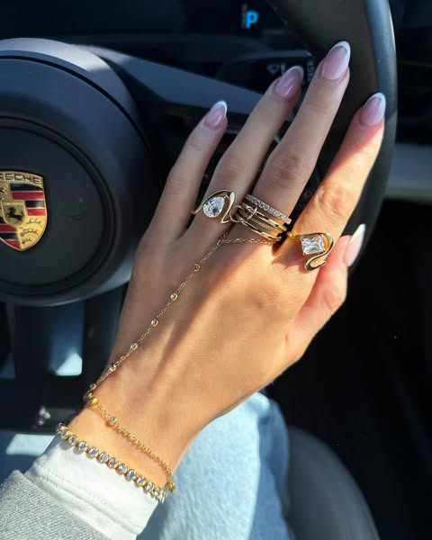
Indigo Lune · 图片 · 在投
跑 517 天 · 复用 1 条
Treat yourself Tuesdays ✨🫶🏼 Waterproof and tarnish-free jewellery you never have to take off. 18K gold plated
Mejuri · 图片 · 在投
跑 112 天 · 复用 28 条
Your fine jewellery collection starts here. Shop 14k gold, responsibly sourced diamonds, and natural and lab g
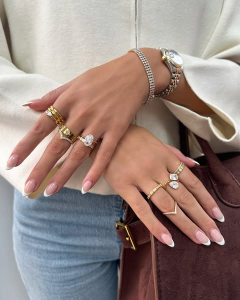
Indigo Lune · 图片 · 已停
跑 478 天 · 复用 1 条
Golden treats are even better when they’re 3 for 2 ✨✨ INDIGOLUNE.COM
Moon Magic · 图片 · 已停
跑 452 天 · 复用 2 条
🎁💍 1.8M followers, 23K+ radiant reviews: Our jewelry transforms. Discover why.
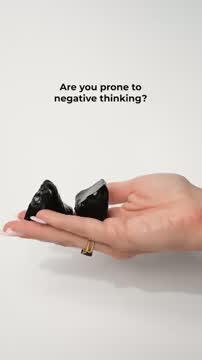
Moon Magic · 视频 · 在投
跑 346 天 · 复用 9 条
✨ Choose your feeling, find your gemstone → www.moonmagic.com/choose-your-feeling 💍 Tarnish-resistant. 💎 Authe
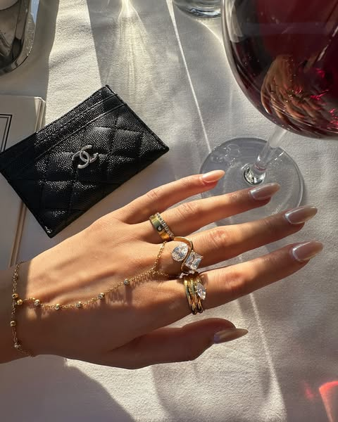
Indigo Lune · 图片 · 已停
跑 456 天 · 复用 1 条
Amoura hand chain 🤌🏼✨🍷 Waterproof, tarnish-free and hypoallergenic. INDIGOLUNE.COM
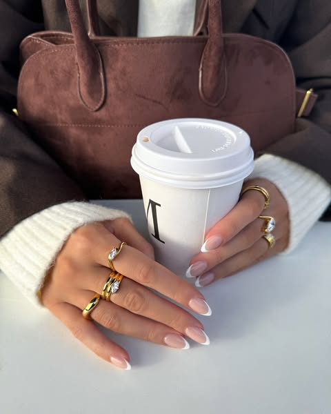
Indigo Lune · 图片 · 已停
跑 453 天 · 复用 1 条
☕️🍂🤎 | Shop 3 for 2 across all items! INDIGOLUNE.COM
Moon Magic · 图片 · 在投
跑 360 天 · 复用 7 条
🎁💍 Crowd-approved cosmic energy: 1.8M fans, 28K+ 5-star reviews. Discover why.
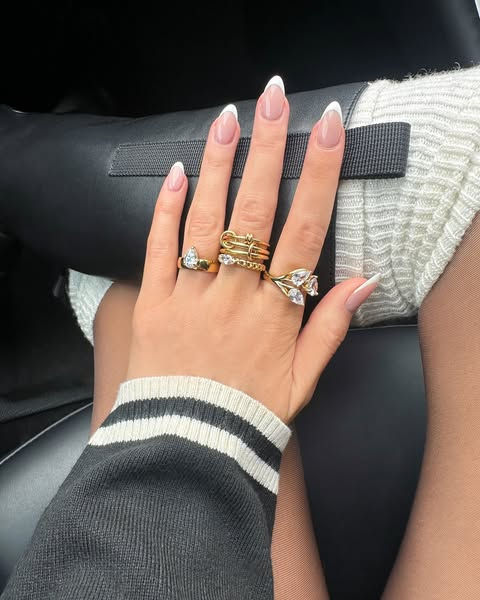
Indigo Lune · 图片 · 已停
跑 449 天 · 复用 1 条
New year means new jewellery 🖤🤍 - Sneak peek of some new pieces dropping this month INDIGOLUNE.COM
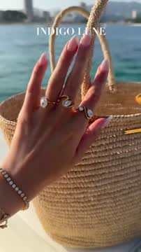
Indigo Lune · 视频 · 在投
跑 448 天 · 复用 1 条
3 for 2 Sale is here! 🎉 Buy 2, Get 1 FREE on everything! This is your sign to treat yourself or buy a gift for
Moon Magic · 图片 · 已停
跑 435 天 · 复用 1 条
🔮 We craft jewelry, you wear magic.
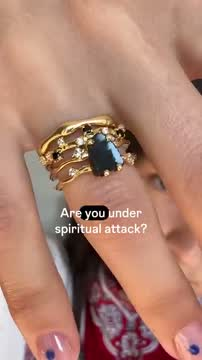
Moon Magic · 视频 · 在投
跑 283 天 · 复用 11 条
Self-love looks like this. 💖
Moon Magic · 图片 · 在投
跑 427 天 · 复用 1 条
🌌 Jewelry that reflects your aura. Alignment never looked this good.
Indigo Lune · 图片 · 在投
跑 410 天 · 复用 2 条
Get more sparkle for less: 3 for 2 on all jewelry! ✨ This is your sign to treat yourself or buy a gift for som
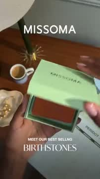
Missoma · 视频 · 已停
跑 417 天 · 复用 1 条
Make it meaningful with our most loved birthstone jewellery gifts. Plus, enjoy free engraving.
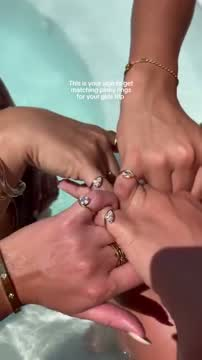
Indigo Lune · 视频 · 在投
跑 410 天 · 复用 1 条
Get more sparkle for less: 3 for 2 on all jewelry! ✨ This is your sign to treat yourself or buy a gift for som
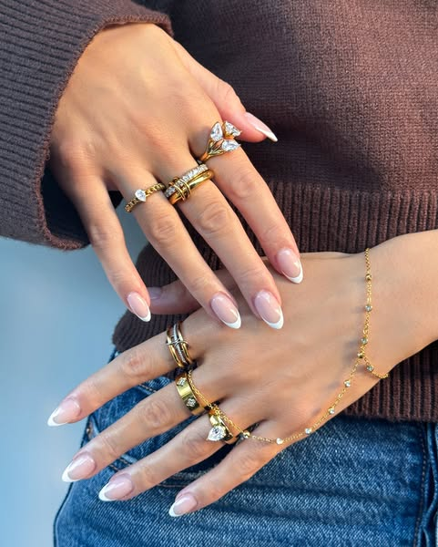
Indigo Lune · 图片 · 已停
跑 403 天 · 复用 1 条
Januarys vibe 🤎✨ INDIGOLUNE.COM
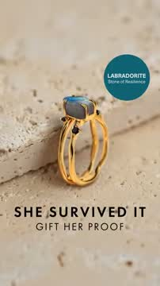
Moon Magic · 视频 · 在投
跑 342 天 · 复用 5 条
Self-love looks like this. 💖
Moon Magic · 图片 · 已停
跑 401 天 · 复用 1 条
🔮 Gemstones infused with magic.
Moon Magic · 图片 · 在投
跑 399 天 · 复用 1 条
🌌 Jewelry that reflects your aura. Alignment never looked this good.
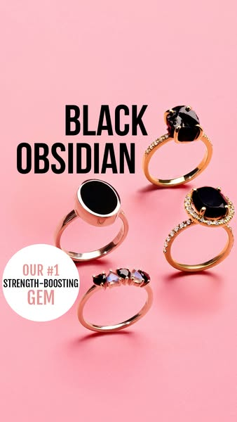
Moon Magic · 图片 · 已停
跑 396 天 · 复用 1 条
🔮 Gemstones infused with magic.
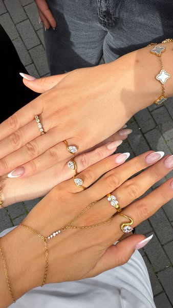
Indigo Lune · 图片 · 在投
跑 392 天 · 复用 1 条
Get more sparkle for less: 3 for 2 on all jewelry! ✨ This is your sign to treat yourself or buy a gift for som
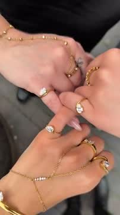
Indigo Lune · 视频 · 在投
跑 392 天 · 复用 1 条
Get more sparkle for less: 3 for 2 on all jewelry! ✨ This is your sign to treat yourself or buy a gift for som
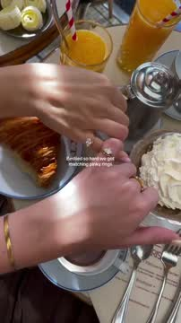
Indigo Lune · 视频 · 在投
跑 389 天 · 复用 1 条
Get more sparkle for less: 3 for 2 on all jewelry! ✨ This is your sign to treat yourself or buy a gift for som
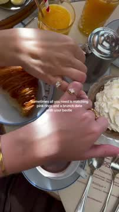
Indigo Lune · 视频 · 在投
跑 389 天 · 复用 1 条
Get more sparkle for less: 3 for 2 on all jewelry! ✨ This is your sign to treat yourself or buy a gift for som
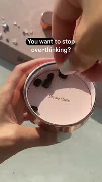
Moon Magic · 视频 · 已停
跑 209 天 · 复用 13 条
🌌 Jewelry that reflects your aura. Alignment never looked this good.
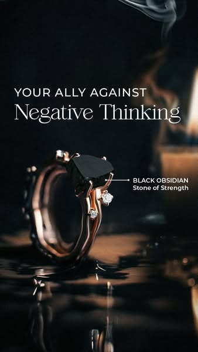
Moon Magic · 图片 · 已停
跑 374 天 · 复用 2 条
🔮 Powerful energies disguised as jewelry.
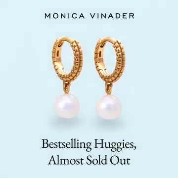
Monica Vinader · 视频 · 已停
跑 220 天 · 复用 12 条
If you love something, don't let it sell out. Shop bestselling Heirloom Round Pearl Huggies before it's too la
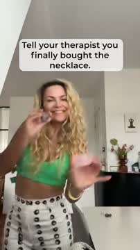
Moon Magic · 视频 · 在投
跑 280 天 · 复用 8 条
🌌 Jewelry that reflects your aura. Alignment never looked this good.
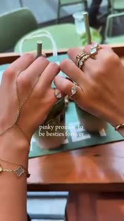
Indigo Lune · 视频 · 在投
跑 321 天 · 复用 5 条
Get more sparkle for less: 2 for 1 on all jewelry! ✨ This is your sign to treat yourself or buy a gift for som
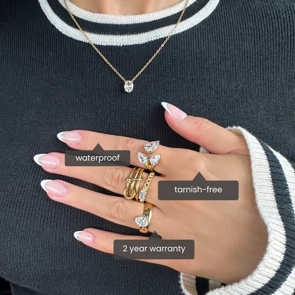
Indigo Lune · 图片 · 已停
跑 381 天 · 复用 1 条
Buy 2, get the 3rd FREE today! ✨ Luxury jewels designed to last. Waterproof 💧 Sweatproof 💦 Tarnish-free 💫 Crea
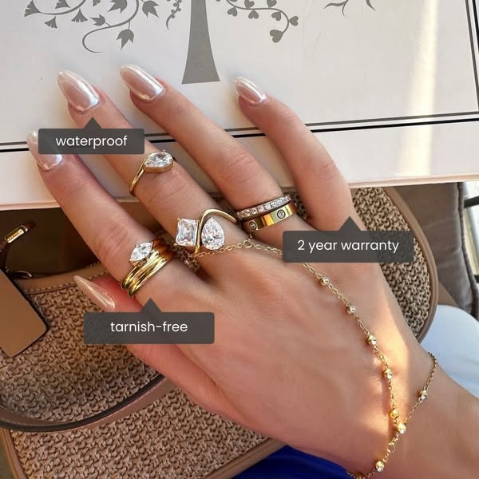
Indigo Lune · 图片 · 已停
跑 381 天 · 复用 1 条
Buy 2, get the 3rd FREE today! ✨ Luxury jewels designed to last. Waterproof 💧 Sweatproof 💦 Tarnish-free 💫 Crea
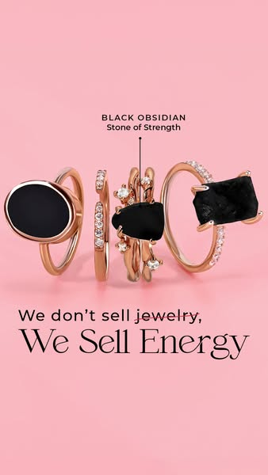
Moon Magic · 图片 · 已停
跑 380 天 · 复用 1 条
🔮 Cosmic dust crystallized as jewelry.
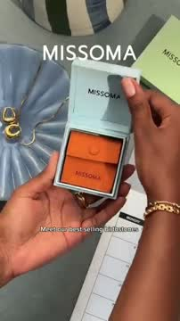
Missoma · 视频 · 在投
跑 378 天 · 复用 1 条
Make it meaningful with our most loved birthstone jewellery gifts. Plus, enjoy free engraving.
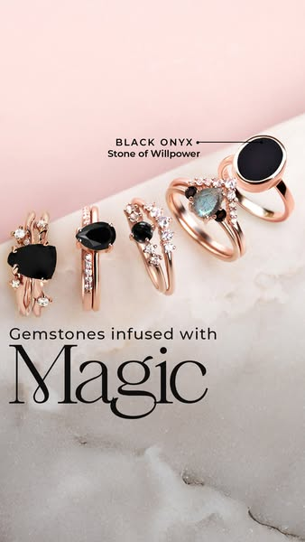
Moon Magic · 图片 · 在投
跑 360 天 · 复用 2 条
🔮 Gemstones infused with magic.
Indigo Lune · 图片 · 已停
跑 370 天 · 复用 1 条
3 for 2 Sale is here! 🎉 Buy 2, Get 1 FREE on everything! This is your sign to treat yourself or buy a gift for
Indigo Lune · 图片 · 已停
跑 362 天 · 复用 1 条
Sunday stacking inspo ✨✨ Waterproof and tarnish-free jewellery you never have to take off. 18K gold plated sta
Moon Magic · 图片 · 在投
跑 346 天 · 复用 2 条
✨ Choose your feeling, find your gemstone → www.moonmagic.com/choose-your-feeling 💍 Tarnish-resistant. 💎 Authe
Moon Magic · 图片 · 在投
跑 360 天 · 复用 1 条
🌟 The $99 bundle everyone's talking about: Jewelry + astrology, worth $200+.
Moon Magic · 图片 · 在投
跑 360 天 · 复用 1 条
Moon Magic: Where gems resonate with purpose. 🌙✨
Indigo Lune · 视频 · 在投
跑 329 天 · 复用 3 条
Get more sparkle for less: 2 for 1 on all jewelry! ✨ This is your sign to treat yourself or buy a gift for som
Missoma · 图片 · 在投
跑 340 天 · 复用 2 条
Get ahead with a curated edit of jewellery for making memories (and win the prize for best gift giver). GIFTS
Indigo Lune · 图片 · 已停
跑 351 天 · 复用 1 条
3 for 2 Sale is here! 🎉 Buy 2, Get 1 FREE on everything! This is your sign to treat yourself or buy a gift for
Missoma · 视频 · 已停
跑 36 天 · 复用 22 条
It's BACK: Get your Chunky T-Bar Necklace while you can. Because we don't want you to miss out again.
Indigo Lune · 图片 · 已停
跑 350 天 · 复用 1 条
3 for 2 Sale is here! 🎉 Buy 2, Get 1 FREE on everything! This is your sign to treat yourself or buy a gift for
Indigo Lune · 图片 · 已停
跑 350 天 · 复用 1 条
Summer is 4ever our fave season 🫶🏼✨🐚 INDIGOLUNE.COM
Monica Vinader · 视频 · 已停
跑 93 天 · 复用 18 条
Miss it now, regret it later. Shop the Heart Locket Necklace in sterling silver. Online and at your nearest MV
Missoma · 图片 · 已停
跑 62 天 · 复用 20 条
Just landed: Jewellery you'll never take off. Meet the finishing touches every collection needs – made to live
Indigo Lune · 视频 · 在投
跑 330 天 · 复用 2 条
Get more sparkle for less: 2 for 1 on all jewelry! ✨ This is your sign to treat yourself or buy a gift for som
Missoma · 图片 · 在投
跑 180 天 · 复用 12 条
Discover iconic jewellery from Missoma, made by hand to champion self-expression. ✅ Code WELCOME10 for 10% off
Indigo Lune · 视频 · 在投
跑 328 天 · 复用 2 条
Get more sparkle for less: 2 for 1 on all jewelry! ✨ This is your sign to treat yourself or buy a gift for som
Indigo Lune · 视频 · 在投
跑 328 天 · 复用 2 条
Get more sparkle for less: 2 for 1 on all jewelry! ✨ This is your sign to treat yourself or buy a gift for som
Indigo Lune · 视频 · 在投
跑 328 天 · 复用 2 条
Get more sparkle for less: 2 for 1 on all jewelry! ✨ This is your sign to treat yourself or buy a gift for som
Indigo Lune · 图片 · 已停
跑 340 天 · 复用 1 条
3 for 2 Sale is here! 🎉 Buy 2, Get 1 FREE on everything! This is your sign to treat yourself or buy a gift for
Missoma · 图片 · 在投
跑 340 天 · 复用 1 条
Get ahead with a curated edit of jewellery for making memories (and win the prize for best gift giver). GIFTS
Indigo Lune · 图片 · 已停
跑 337 天 · 复用 1 条
Buy 2, get the 3rd FREE today! ✨ Made to last. Stack to perfection with pieces that won't tarnish ✨ INDIGOLUNE
Indigo Lune · 视频 · 在投
跑 334 天 · 复用 1 条
Get more sparkle for less: 3 for 2 on all jewelry! ✨ This is your sign to treat yourself or buy a gift for som
Indigo Lune · 视频 · 在投
跑 333 天 · 复用 1 条
Get more sparkle for less: 3 for 2 on all jewelry! ✨ This is your sign to treat yourself or buy a gift for som
Moon Magic · 图片 · 在投
跑 333 天 · 复用 1 条
🌌 Jewelry that reflects your aura. Alignment never looked this good.
Moon Magic · 图片 · 已停
跑 255 天 · 复用 6 条
500K+ women already wear the magic. Are you next? ✨
Moon Magic · 图片 · 已停
跑 330 天 · 复用 1 条
🎁💍 1.8M followers, 23K+ 5-star reviews: Our gems' magic speaks. Discover Why.
Indigo Lune · 视频 · 在投
跑 328 天 · 复用 1 条
Get more sparkle for less: 2 for 1 on all jewelry! ✨ This is your sign to treat yourself or buy a gift for som
Indigo Lune · 视频 · 在投
跑 328 天 · 复用 1 条
Get more sparkle for less: 2 for 1 on all jewelry! ✨ This is your sign to treat yourself or buy a gift for som
Indigo Lune · 图片 · 已停
跑 328 天 · 复用 1 条
3 for 2 Sale is here! 🎉 Buy 2, Get 1 FREE on everything! This is your sign to treat yourself or buy a gift for
Indigo Lune · 视频 · 在投
跑 311 天 · 复用 2 条
Get more sparkle for less: 2 for 1 on all jewelry! ✨ This is your sign to treat yourself or buy a gift for som
Moon Magic · 图片 · 在投
跑 324 天 · 复用 1 条
🌌 Jewelry that reflects your aura. Alignment never looked this good.
全部 732 条素材（含文案、起投/停投日、复用数、原链接）已交付在本地素材库 E:/Alvaura/竞品广告素材/，每个品牌文件夹内有清单表。
9. 数据来源与局限
| 数据 | 来源与方法 | 规模 | 局限 |
|---|
| 广告素材与投放数据 | Meta 广告库公开页，按品牌主页抓取；起投日/停投日/复用数为 Meta 页面标注 | 732 条（5 家） | 未登录访客每个查询只返回首批约 29 条，靠几十组查询条件扩大覆盖；仍是抽样非全量；图片为广告库提供的 600px 预览尺寸 |
| 视频逐条拆解 | Gemini 3.5 Flash 连画面带声音看完整条，按 Hook/Body/CTA 切段，记录屏幕文字与口播原文 | 338 条 | AI 判读，段落切分和「说服意图」为模型判断；口播原文与本机 whisper 转写做了交叉 |
| 口播转写 | faster-whisper（small 模型）本机转写全部有音轨视频；≥8 词且人声占比 ≥25% 判为口播 | 348 条 | 歌词偶尔会被判为人声；已用 Gemini 判定交叉 |
| 正文文案分类 | Gemini 按钩子类型 / 人称 / 促销机制 / 情绪 / 句式模板分类 | 729 条 | 3 条广告在 Meta 页面上没有正文 |
| 图片广告拆解 | 每品牌取跑得最久 + 复用最多的图片各 8 张送 Gemini 看版式与文字 | 72 张 | 只拆了头部图片，未覆盖全部 349 张 |
| 公式归纳 / 口播规律 / 文案规律 / 建议 | 在逐条拆解结果上由 Gemini 归纳，再经人工审读；所有引用的广告编号都可在本页播放或点回原页核对 | — | 「为什么有效」是基于结构和投放时长的推断，不是投放后台的转化数据（竞品后台数据不可得） |